| Eelvaade | OpenSCAD kood | Info (.md) |
|---|---|---|
|
Allen-Key-Handle/Allen-Key-Handle.scad
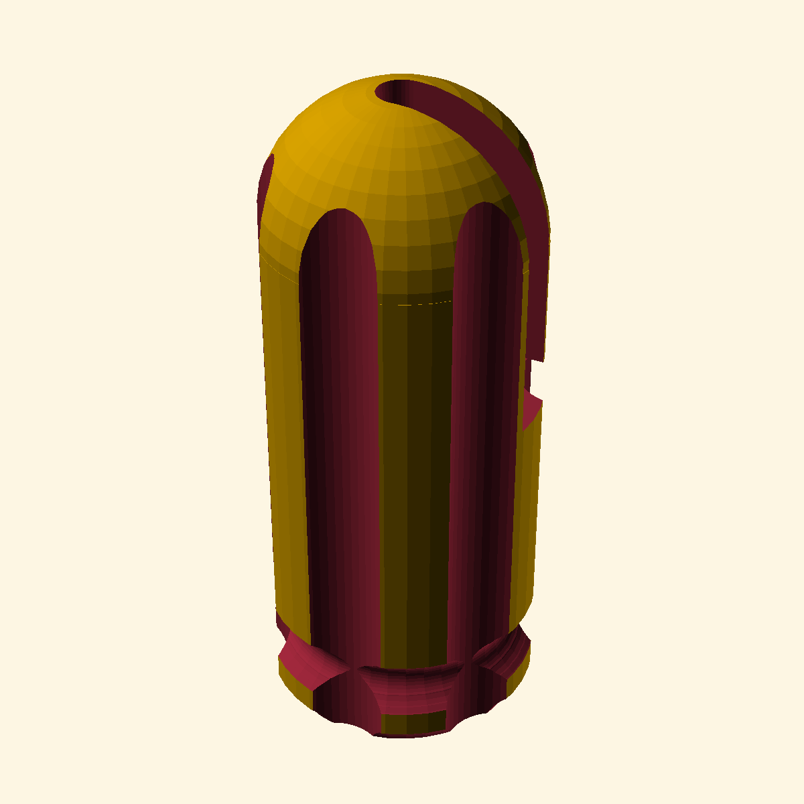 |
// Diameter of hole for the hex wrench
hex_size = 6; // KT TX30 (M6) L-shaped Torx wrench
//hex_size = 7; // KT TX40 (M8) L-shaped Torx wrench
// Increase slot size by this amount
hole_delta = 0.1;
// Diameter of the handle
handle_diameter = 35;
// Overall length of the handle
handle_length = 80; //[35:100]
handle(hex_size);
module handle(hex_size)
{
hex_radius = (hex_size + hole_delta) / 2;
hex_size = hex_size + hole_delta;
handle_radius = handle_diameter / 2;
knurl_offset = handle_radius * 1.2;
//handle_height = 50; // moved to customizer. See below
handle_height=handle_length-12.5;
slot_width = 1.2 * handle_radius;
zip_tie_back = 0.6 * handle_radius;
slot_bottom = 45;
z_adjust = hole_delta*1.5; // printing a supported overhand will shrink the horizontal slot in the z-dimension, requiring an additional offset in adition to the already-applied hole_delta.
$fn=40; // Control quality of mesh
//hole_radius = hex_radius + .2; // Give a little more room for small hole
hole_radius = hex_radius;
difference()
{
union()
{
cylinder(h = 5, r1 = handle_radius, r2 = handle_radius);
translate(v=[0, 0, 5])
cylinder(h = handle_height - 5, r = handle_radius);
translate(v=[0, 0, handle_height])
sphere(handle_radius);
}
for (angle = [30:60:360])
translate(v=[knurl_offset * cos(angle), knurl_offset * sin(angle), 0])
cylinder(h = handle_height + handle_radius, r = handle_radius / 2.7);
// Shaft hole
cylinder(h = handle_height + handle_radius, r = hole_radius);
// Small cone at bottom
cylinder(h = 2, r1 = hole_radius + .6, r2 = hole_radius);
// Slot for the wrench
translate(v=[0, -hex_size / 2, slot_bottom])
cube(size = [handle_radius, hex_size, handle_height + handle_radius]);
// Slot for bend in wrench
translate(v=[0, -hex_size / 2, slot_bottom - 1.5 * hex_size])
cube(size = [1.5 * hex_size, hex_size, 2 * hex_size]);
// Wrench rotation slot
translate(v=[0,0, slot_bottom])
difference(){
cylinder(h = hex_size+z_adjust, r1 = handle_radius, r2 = handle_radius);
translate(v=[-handle_radius,0,0])
cube(handle_radius);
translate(v=[-handle_radius,-handle_radius,0])
cube(handle_radius);
translate(v=[0,-handle_radius,0])
cube(handle_radius);
}
// Bend rotation slot
translate(v=[0, 0, slot_bottom - 1.5 * hex_size])
difference(){
cylinder(h=2*hex_size,r2=norm([1.5*hex_size,hex_size]), r1=hex_size);
translate(v=[-2*hex_size,0,0])
cube(2*hex_size);
translate(v=[-2*hex_size,-2*hex_size,0])
cube(2*hex_size);
translate(v=[0,-2*hex_size,0])
cube(2*hex_size);
}
rotate([0,0,90])
translate(v=[0, -hex_size / 2, slot_bottom - 1.5 * hex_size])
cube(size = [1.5 * hex_size, hex_size, 2 * hex_size]);
// Lock slot
rotate([0,0,90])
translate(v=[0, -hex_size / 2, slot_bottom])
cube(size = [handle_radius, hex_size, hex_size*2]);
translate(v=[0, 0, slot_bottom+2*hex_size])
rotate([-90,0,0])
cylinder(h=handle_radius, d=hex_size);
// for the next subtractions, an arbitrary parameter that doesn't have a good name
x=handle_radius / 6.0;
// Subtract a tourous to make it look like a screwdriver
translate(v=[0,0, 10])
rotate_extrude(convexity = 10)
translate([handle_radius, 0, 0])
circle(r =x);
// the following extra tauri makes it look smooter, basically a fake, easier way of filleting. Values are arbitrary
translate(v=[0,0, 10])
rotate_extrude(convexity = 10)
translate([handle_radius*1.085, 0, 0])
circle(r =x*1.38);
translate(v=[0,0, 10])
rotate_extrude(convexity = 10)
translate([handle_radius*1.15, 0, 0])
circle(r =x*1.625);
// Chamfer at the bottom
translate(v=[0,0,-2])
rotate_extrude(convexity = 10)
translate([handle_radius*1.2, 0, 0])
circle(r =x*2);
}
}
// |
— |
|
Apollo-AIR-1-Wall-Mount/Apollo-AIR-1-Wall-Mount.scad
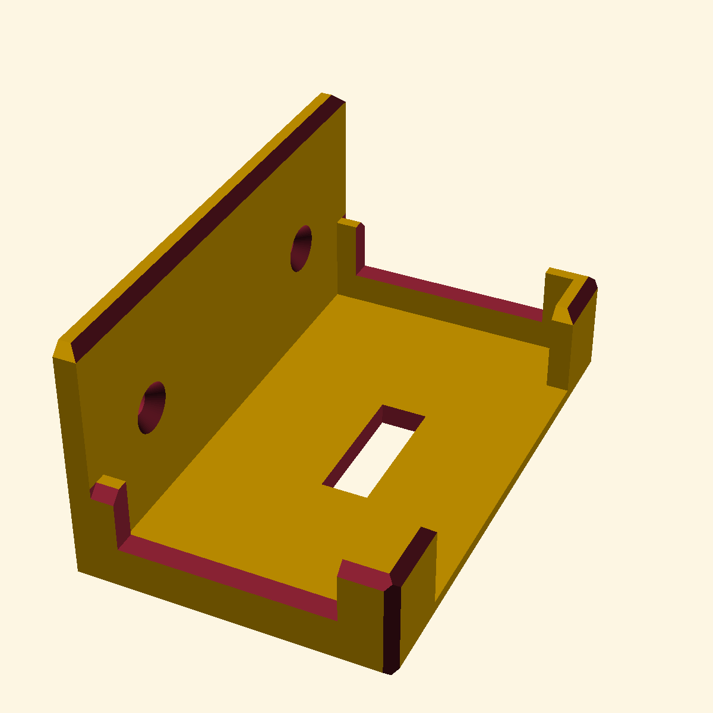 |
/* [Apollo Air-1 Wall Mount] */
// Width of the sensor (mm)
sensor_w = 62;
// Depth of the sensor (mm)
sensor_d = 35;
// Total height of the sensor (mm)
sensor_h = 62;
// Thickness of the mount walls (mm)
wall_t = 3;
// Height of the front retaining corners (mm)
corner_h = 15;
// Printing tolerance offset (mm)
tol = 0.25;
// Global chamfer size (mm)
ch = 1.0;
/* [Features & Strength] */
// Height of the solid side wall from the INNER bottom before vents start (mm)
vent_base_h = 4.0;
// Width of the side margins for the front opening (mm)
grip_zone = 10;
// Clearance from back wall for side vents (mm)
vent_clearance_back = 3;
// Clearance from front face for side vents (mm)
vent_clearance_front = 4;
// Side margin for the bottom USB-C hole (mm)
usb_side_margin = 22;
/* [Mounting Screws] */
// Diameter of the screw shaft (mm)
screw_dia = 3.5;
// Diameter of the screw head/countersink (mm)
csink_dia = 6.5;
// Depth of the countersink (mm)
csink_depth = 2.0;
// Horizontal distance from center for each screw (mm)
screw_dist_from_center = 20;
/* [Advanced] */
// Smoothness of circular elements
$fn = 64;
/* [Internal Calculations] */
ch_diag = ch * 1.414;
inner_w = sensor_w + (2 * tol);
inner_d = sensor_d + tol;
outer_w = inner_w + (2 * wall_t);
total_d = inner_d + wall_t;
back_h = (sensor_h / 2) + wall_t;
vent_z_start = wall_t + vent_base_h;
module mount() {
difference() {
// --- Main Body ---
union() {
// BACK WALL: 2D profile for perfect top corner chamfers
translate([-wall_t, 0, 0])
rotate([90, 0, 90])
linear_extrude(height = wall_t)
polygon([
[0, 0],
[outer_w, 0],
[outer_w, back_h - ch_diag],
[outer_w - ch_diag, back_h],
[ch_diag, back_h],
[0, back_h - ch_diag]
]);
// Bottom base plate
cube([inner_d, outer_w, wall_t]);
// FRONT FACE: 2D profile with internal chamfers and cutout
translate([inner_d, 0, 0])
rotate([90, 0, 90])
linear_extrude(height = wall_t)
polygon([
[0, 0],
[outer_w, 0],
[outer_w, corner_h],
[outer_w - grip_zone, corner_h],
[outer_w - grip_zone - ch_diag, corner_h - ch_diag],
[outer_w - grip_zone - ch_diag, wall_t],
[grip_zone + ch_diag, wall_t],
[grip_zone + ch_diag, corner_h - ch_diag],
[grip_zone, corner_h],
[0, corner_h]
]);
// Left side support wall
cube([inner_d, wall_t, corner_h]);
// Right side support wall
translate([0, outer_w - wall_t, 0]) cube([inner_d, wall_t, corner_h]);
}
// --- External Edge Chamfers (3D cutters) ---
// Front Panel Frame (Top and Bottom)
translate([total_d, -1, 0]) rotate([0, -45, 0]) translate([-ch, 0, -ch]) cube([ch*2, outer_w + 2, ch*2]);
translate([total_d, -1, corner_h]) rotate([0, -45, 0]) translate([-ch, 0, -ch]) cube([ch*2, outer_w + 2, ch*2]);
// Front Vertical Outer Edges
translate([total_d, 0, -1]) rotate([0, 0, 45]) translate([-ch, -ch, 0]) cube([ch*2, ch*2, corner_h + 2]);
translate([total_d, outer_w, -1]) rotate([0, 0, 45]) translate([-ch, -ch, 0]) cube([ch*2, ch*2, corner_h + 2]);
// Longitudinal Side Edges
translate([-wall_t - 0.1, 0, 0]) rotate([-45, 0, 0]) translate([0, -ch, -ch]) cube([total_d + wall_t + 0.2, ch*2, ch*2]);
translate([-wall_t - 0.1, outer_w, 0]) rotate([-45, 0, 0]) translate([0, -ch, -ch]) cube([total_d + wall_t + 0.2, ch*2, ch*2]);
translate([0, 0, corner_h]) rotate([-45, 0, 0]) translate([0, -ch, -ch]) cube([total_d + 0.1, ch*2, ch*2]);
translate([0, outer_w, corner_h]) rotate([-45, 0, 0]) translate([0, -ch, -ch]) cube([total_d + 0.1, ch*2, ch*2]);
// Back Wall Top Internal Edge
translate([0, -1, back_h]) rotate([0, -45, 0]) translate([-ch, 0, -ch]) cube([ch*2, outer_w + 2, ch*2]);
// --- Functional Cutouts ---
// Side ventilation windows (Elevated for strength)
translate([vent_clearance_back, -1, vent_z_start])
cube([inner_d - vent_clearance_back - vent_clearance_front, wall_t + 2, corner_h - vent_z_start + 1]);
translate([vent_clearance_back, outer_w - wall_t - 1, vent_z_start])
cube([inner_d - vent_clearance_back - vent_clearance_front, wall_t + 2, corner_h - vent_z_start + 1]);
// USB-C port access in the bottom
usb_x_start = 17;
usb_x_end = 12;
translate([usb_x_start, wall_t + tol + usb_side_margin, -1])
cube([inner_d - usb_x_start - usb_x_end, inner_w - (2 * usb_side_margin), wall_t + 2]);
// Mounting Holes
screw_z_pos = back_h / 2;
center_y_pos = outer_w / 2;
translate([0, center_y_pos - screw_dist_from_center, screw_z_pos]) screw_hole();
translate([0, center_y_pos + screw_dist_from_center, screw_z_pos]) screw_hole();
}
}
// Module for countersunk wall screws
module screw_hole() {
rotate([0, -90, 0]) {
cylinder(d = screw_dia, h = wall_t + 2);
cylinder(d1 = csink_dia, d2 = screw_dia, h = csink_depth);
}
}
mount(); |
— |
|
Cabinet-Key/Cabinet-Key.scad
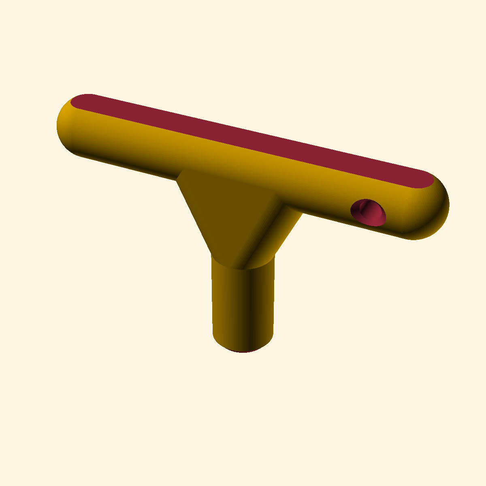 |
// --- PARAMETRIC ELECTRICAL CABINET KEY ---
// Version: 1.24
// Changes: Lanyard hole is now permanent, code simplified.
/* [Shaft Parameters] */
// Diameter of the shaft and handle (mm)
shaft_dia = 15; // [10:1:25]
// Length of the shaft until the handle axis (mm)
shaft_length = 50; // [30:1:100]
// Side length of the square socket (mm)
square_size = 7.2; // [4:0.1:12]
// Depth of the straight part of the square socket (mm)
square_depth = 10; // [5:1:20]
// Small pyramid entry chamfer (mm)
socket_entry_chamfer = 0.5; // [0:0.1:4]
// Outer chamfer size for the shaft tip (mm)
shaft_outer_chamfer = 1.5; // [0:0.1:4]
/* [Handle Parameters] */
// Total length of the handle (mm)
handle_length = 80; // [50:1:150]
// Size of the reinforcements (Gussets)
support_size = 12; // [5:1:25]
// Flat cut on top for bed adhesion (mm)
handle_flat_cut = 1.0; // [0:0.1:5]
/* [Lanyard Hole] */
// Diameter of the hole (mm)
hole_dia = 5; // [2:0.1:10]
// Width of the hole chamfers (mm)
hole_chamfer = 1.5; // [0:0.1:4]
// Distance from the handle end (in multiples of shaft diameter)
dist_factor = 1.0; // [0.5:0.1:3.0]
/* [Rendering Quality] */
$fn = 128;
/* [Hidden] */
dist_from_tip = dist_factor * shaft_dia;
hole_pos_x = (handle_length / 2 + shaft_dia / 2) - dist_from_tip;
// --- Model Assembly ---
difference() {
// 1. MAIN BODY
union() {
// Handle and its spherical ends
translate([0, 0, shaft_length]) {
rotate([0, 90, 0]) {
cylinder(d = shaft_dia, h = handle_length, center = true);
translate([0, 0, -handle_length/2]) sphere(d = shaft_dia);
translate([0, 0, handle_length/2]) sphere(d = shaft_dia);
}
}
// Seamless Shaft and Reinforcements (Merged via hull)
hull() {
translate([0, 0, shaft_length - support_size * 2])
cylinder(d = shaft_dia, h = 0.1);
for(r = [0, 180]) {
rotate([0, 0, r])
translate([shaft_dia/3 + support_size/2, 0, shaft_length])
sphere(d = shaft_dia);
}
}
// Main shaft cylinder
cylinder(d = shaft_dia, h = shaft_length - support_size * 2);
}
// --- SUBTRACTIONS ---
// 2. Flat top cut for better printing surface
if (handle_flat_cut > 0) {
translate([-handle_length, -handle_length, shaft_length + shaft_dia/2 - handle_flat_cut])
cube([handle_length * 2 + shaft_dia, handle_length * 2, handle_flat_cut + 1]);
}
// 3. Square Socket with pyramid entry
translate([0, 0, -0.01]) {
if (socket_entry_chamfer > 0) {
linear_extrude(height = socket_entry_chamfer + 0.01, scale = square_size / (square_size + socket_entry_chamfer * 2))
square(square_size + socket_entry_chamfer * 2, center = true);
}
translate([0, 0, socket_entry_chamfer])
linear_extrude(height = square_depth)
square(square_size, center = true);
}
// 4. Outer shaft tip chamfer
if (shaft_outer_chamfer > 0) {
difference() {
translate([0,0,-0.1])
cylinder(d = shaft_dia + 1, h = shaft_outer_chamfer + 0.1);
translate([0,0,-0.2])
cylinder(d1 = shaft_dia - shaft_outer_chamfer * 2, d2 = shaft_dia, h = shaft_outer_chamfer + 0.2);
}
}
// 5. Permanent Lanyard Hole with Chamfers
translate([hole_pos_x, 0, shaft_length])
rotate([90, 0, 0]) {
// Main hole
cylinder(d = hole_dia, h = shaft_dia + 5, center = true);
// Chamfer Side 1 (positive Y)
translate([0, 0, shaft_dia/2 - hole_chamfer + 0.01])
cylinder(d1 = hole_dia, d2 = hole_dia + hole_chamfer * 2, h = hole_chamfer);
// Chamfer Side 2 (negative Y)
translate([0, 0, -shaft_dia/2 - 0.01])
cylinder(d1 = hole_dia + hole_chamfer * 2, d2 = hole_dia, h = hole_chamfer);
}
} |
— |
|
DIN-Mount/CT-Holder.scad
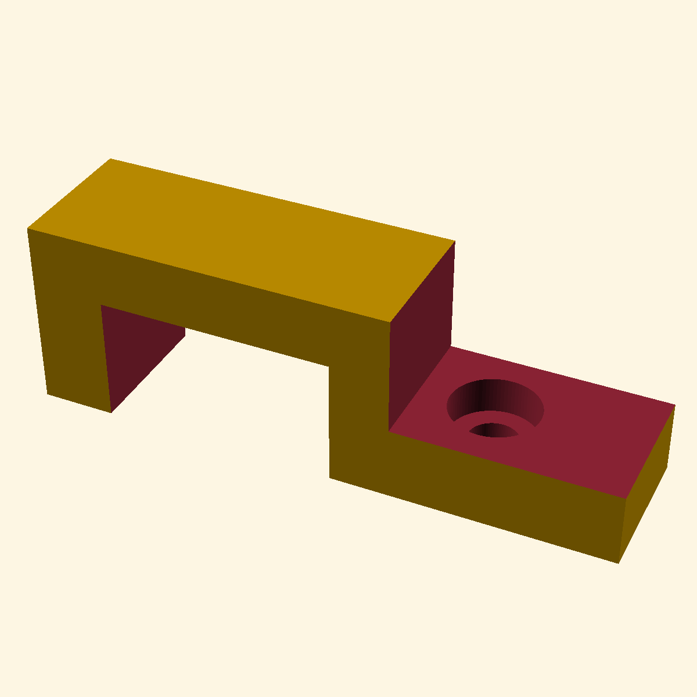 |
/* CT Holder - Version 0.12
Method: Subtractive with nested difference.
Modification: Bolt center 10mm from end, round head pocket.
*/
// --- Parameetrid ---
ct_od = 31;
ct_id = 17;
ct_h = 16; // CT paksus (laius)
wall_t = 5; // Alumise lapi paksus
bolt_d = 3.4; // M3 poldi ava
bolt_head_d = 6.0; // M3 ümarpea läbimõõt
$fn = 80;
block_l = 40;
block_h = 13;
block_w = 10; // Hoidiku laius (läheb läbi CT ava)
// Arvutatud väärtused
ct_r_in = ct_id / 2; // 8.5mm
cutout_h = 8; // Sisselõike kõrgus
module ct_holder() {
difference() {
// 1. Algne põhiplokk
cube([block_l, block_w, block_h]);
// 2. Poldi lapi tekitamine (parem ülemine lõige)
translate([block_l - 15, -1, wall_t]) // Pikendasime sisselõiget, et polt mahuks
cube([16, block_w + 2, block_h + 1]);
// 3 ja 6 kombineerituna: CT pesa + kumeruse säilitamine
translate([5, -1, 0]) {
difference() {
// Kandiline sisselõige
cube([ct_h, block_w + 2, cutout_h + 1]);
// KURV: CT siseava raadius
translate([0, (block_w + 2) / 2, ct_od/2])
rotate([0, 90, 0])
cylinder(h = ct_h, r = ct_r_in);
}
}
// 4. Poldi ava (Kese 10mm otsast)
translate([block_l - 10, block_w / 2, -1])
cylinder(h = wall_t + 2, d = bolt_d);
// 5. Poldipea süvend (Ümarpea jaoks sirge silinder)
translate([block_l - 10, block_w / 2, wall_t - 2.5])
cylinder(h = 3, d = bolt_head_d);
}
}
ct_holder(); |
— |
|
DIN-Mount/DIN-Mount.scad
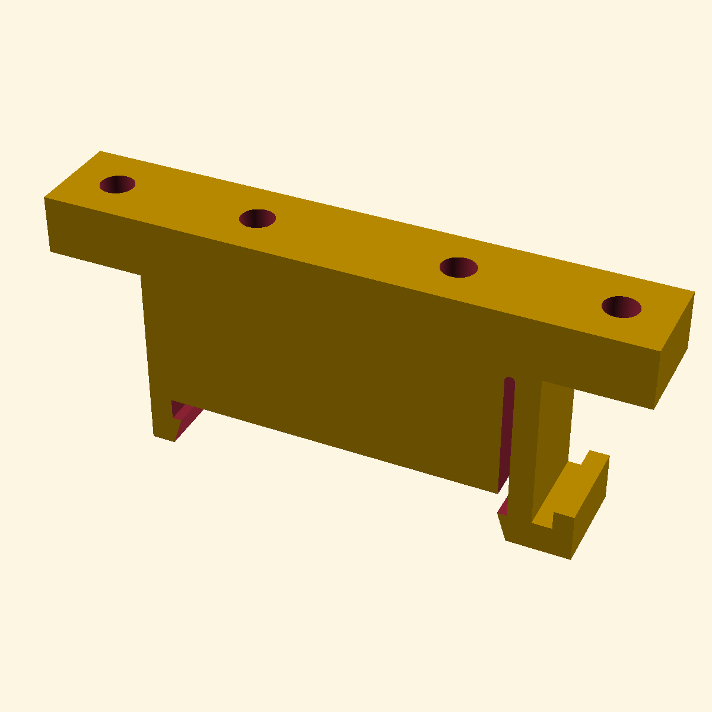 |
/*
* DIN-liistu universaalne kinnitus
* Versioon: 0.26
*/
// --- Baasparameetrid ---
rail_width = 34.9;
rail_thick = 0.9;
tolerance = 0.2;
base_w = 40.0;
base_d = 10.0;
base_h = 25.0;
dist_from_bottom = 3.0;
// --- Vertikaalse pilu parameetrid ---
slit_width = 1.0;
slit_length = 15.0;
// --- Hamba parameetrid ---
hook_size = 3.0;
// --- L-konksu (vabastushoova) parameetrid ---
lever_ext = 4.0;
lever_h = 5.0;
lever_wall_t = 2.0;
lever_base_h = dist_from_bottom;
// --- Kinnitusaukude ja mutrite parameetrid ---
screw_d = 3.4;
nut_d = 6.5;
nut_h = 3.0;
dist_from_top = 4.0;
screw_dist_from_center = 10.0;
// --- Kinnituskõrvade parameetrid ---
enable_ears = true;
ear_l = 10.0;
ear_h = 6.0; // Muudetud: Madalam profiil (6mm)
// --- Arvutatud väärtused ---
rail_x_center = base_w / 2;
rail_x_start = (base_w - (rail_width + tolerance)) / 2;
rail_x_end = rail_x_start + (rail_width + tolerance);
trap_top_width = (rail_width + tolerance) - hook_size;
trap_bot_width = (rail_width + tolerance);
$fn = 64;
module screw_and_nut(x, y, z_total_h) {
translate([x, y, -1]) {
cylinder(d = screw_d, h = z_total_h + 2);
nut_pocket_h = max(0, z_total_h - dist_from_top + 1);
cylinder(d = nut_d, h = nut_pocket_h, $fn=6);
}
}
module din_mount() {
union() {
// 1. PÕHIKEHA
difference() {
cube([base_w, base_d, base_h]);
translate([rail_x_start, -1, dist_from_bottom])
cube([rail_width + tolerance, base_d + 2, rail_thick + tolerance]);
translate([rail_x_center, -1, 0])
hull() {
translate([-trap_bot_width / 2, 0, -0.1]) cube([trap_bot_width, base_d + 2, 0.1]);
translate([-trap_top_width / 2, 0, dist_from_bottom]) cube([trap_top_width, base_d + 2, 0.1]);
}
translate([rail_x_end - slit_width, -1, dist_from_bottom])
cube([slit_width, base_d + 2, slit_length]);
translate([rail_x_end - slit_width/2, -1, dist_from_bottom + slit_length])
rotate([-90, 0, 0]) cylinder(d = slit_width, h = base_d + 2);
for (x_offset = [-screw_dist_from_center, screw_dist_from_center]) {
screw_and_nut(rail_x_center + x_offset, base_d / 2, base_h);
}
}
// 2. L-KONKS
translate([base_w, 0, 0]) {
cube([lever_ext, base_d, lever_base_h]);
translate([lever_ext - lever_wall_t, 0, lever_base_h])
cube([lever_wall_t, base_d, lever_h - lever_base_h]);
}
// 3. KINNITUSKÕRVAD
if (enable_ears) {
difference() {
translate([-ear_l, 0, base_h - ear_h]) cube([ear_l, base_d, ear_h]);
screw_and_nut(-ear_l/2, base_d/2, base_h);
}
difference() {
translate([base_w, 0, base_h - ear_h]) cube([ear_l, base_d, ear_h]);
screw_and_nut(base_w + ear_l/2, base_d/2, base_h);
}
}
}
}
din_mount(); |
— |
|
DIN-Mount/Serial-Energy-Meter-PCB-Cover.scad
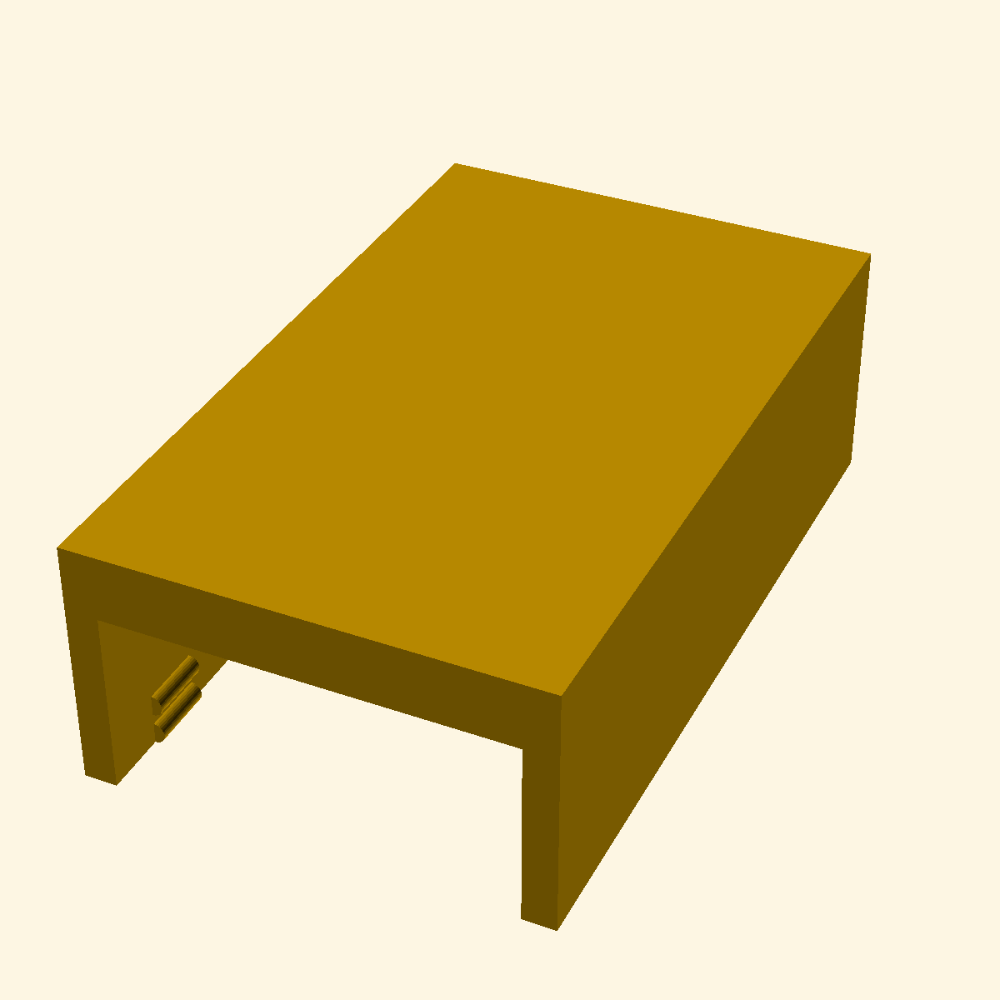 |
// PCB Kate / PCB Cover
// Version: 0.10
// Last Modified: 2026-02-16
// Muudatus: Klipi pikkus 5mm, asukoht 5-10mm otstest
/* [Peamised mõõdud] */
pcb_width = 30;
pcb_length = 58;
inner_height = 15;
wall_thickness = 2.5;
pcb_thickness = 1.6;
/* [Kinnitusnupud] */
bump_radius = 0.8;
bump_length = 5; // Klipi pikkus on nüüd 5mm
clip_offset = 5; // Kaugus karbi otstest on 5mm
/* [Otsmised tugevdusribid] */
rib_thickness = wall_thickness;
rib_depth = 2.5;
$fn = 32;
module pcb_cover_v0_10() {
total_height = pcb_thickness + inner_height + wall_thickness;
// Keskmestamine
translate([-(pcb_width + 2 * wall_thickness)/2, -pcb_length/2, 0]) {
// 1. Pealmine kaas
translate([0, 0, total_height - wall_thickness])
cube([pcb_width + 2 * wall_thickness, pcb_length, wall_thickness]);
// 2. Külgseinad
cube([wall_thickness, pcb_length, total_height]);
translate([pcb_width + wall_thickness, 0, 0])
cube([wall_thickness, pcb_length, total_height]);
// 3. Otsmised tugevdusribid
// Esimene ots
translate([wall_thickness, 0, total_height - wall_thickness - rib_depth])
cube([pcb_width, rib_thickness, rib_depth]);
// Tagumine ots
translate([wall_thickness, pcb_length - rib_thickness, total_height - wall_thickness - rib_depth])
cube([pcb_width, rib_thickness, rib_depth]);
// 4. Kinnitusmummud (asuvad vahemikus 5-10mm ja pcb_length-10 kuni pcb_length-5)
for(y_pos = [clip_offset, pcb_length - clip_offset - bump_length]) {
// Vasak sein
translate([wall_thickness, y_pos, 0])
flush_bump_pair();
// Parem sein
translate([pcb_width + wall_thickness, y_pos, 0])
mirror([1, 0, 0])
flush_bump_pair();
}
}
}
module flush_bump_pair() {
// Alumine poolsilinder
translate([0, 0, bump_radius]) rotate([-90, 0, 0]) half_cylinder();
// Ülemine poolsilinder (pcb_thickness vahega)
translate([0, 0, bump_radius * 2 + pcb_thickness]) rotate([-90, 0, 0]) half_cylinder();
}
module half_cylinder() {
difference() {
cylinder(r = bump_radius, h = bump_length);
translate([-bump_radius*2, -bump_radius, -0.1])
cube([bump_radius*2, bump_radius*2, bump_length+0.2]);
}
}
// Renderdamine
pcb_cover_v0_10(); |
— |
|
DIN-Mount/Serial-Energy-Meter-PCB.scad
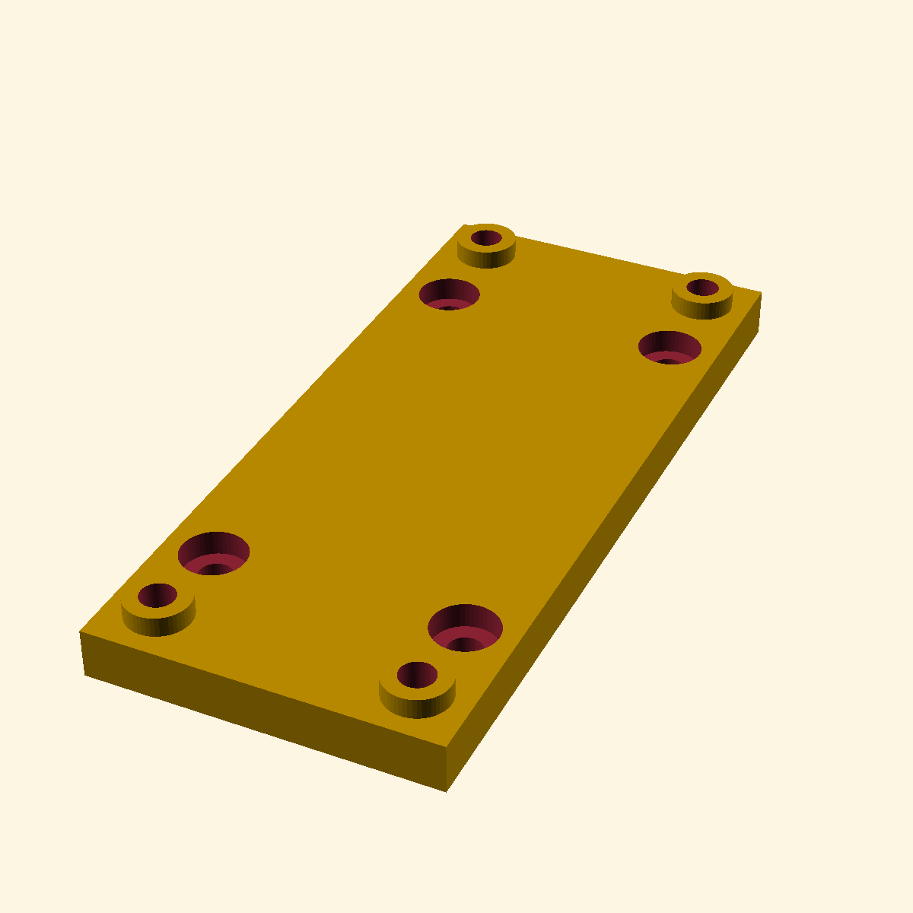 |
// PCB Spacer Plate
// Version: 0.02
// Description: Parametric spacer plate with PCB mounts and additional side mounting holes
/* [PCB Dimensions] */
pcb_hole_dist_x = 25;
pcb_hole_dist_y = 69;
plate_thickness = 5;
edge_margin = 5;
/* [PCB Hardware] */
m3_bolt_dia = 3.4;
nut_dia = 6.3;
nut_depth = 3.0;
standoff_height = 2.0;
standoff_wall_thickness = 1.5;
/* [Plate Mounting Holes] */
mount_hole_dia = 3.4;
mount_edge_offset = 5;
mount_hole_spacing = 50;
cap_recess_dia = 6.5; // Recess for round head bolt
cap_recess_depth = 2.5;
/* [Calculated Dimensions] */
plate_width_x = pcb_hole_dist_x + (edge_margin * 2);
plate_length_y = pcb_hole_dist_y + (edge_margin * 2);
standoff_outer_d = m3_bolt_dia + (standoff_wall_thickness * 2);
$fn = 50;
module pcb_spacer_plate() {
difference() {
// Main Body
union() {
cube([plate_width_x, plate_length_y, plate_thickness]);
// PCB Standoffs
for (x = [edge_margin, edge_margin + pcb_hole_dist_x]) {
for (y = [edge_margin, edge_margin + pcb_hole_dist_y]) {
translate([x, y, plate_thickness])
cylinder(h = standoff_height, d = standoff_outer_d);
}
}
}
// 1. PCB Mounting Holes and Nut Recesses
for (x = [edge_margin, edge_margin + pcb_hole_dist_x]) {
for (y = [edge_margin, edge_margin + pcb_hole_dist_y]) {
translate([x, y, -1])
cylinder(h = plate_thickness + standoff_height + 2, d = m3_bolt_dia);
translate([x, y, -0.1])
cylinder(h = nut_depth, d = nut_dia, $fn = 6);
}
}
// 2. Plate Side Mounting Holes (20mm spacing, 5mm from long edges)
y_center = plate_length_y / 2;
for (x = [mount_edge_offset, plate_width_x - mount_edge_offset]) {
for (y = [y_center - mount_hole_spacing/2, y_center + mount_hole_spacing/2]) {
// Through hole
translate([x, y, -1])
cylinder(h = plate_thickness + 2, d = mount_hole_dia);
// Recess for round head (on top)
translate([x, y, plate_thickness - cap_recess_depth])
cylinder(h = cap_recess_depth + 0.1, d = cap_recess_dia);
}
}
}
}
pcb_spacer_plate(); |
— |
|
DIN-Mount/WeMos-Mini-Cover.scad
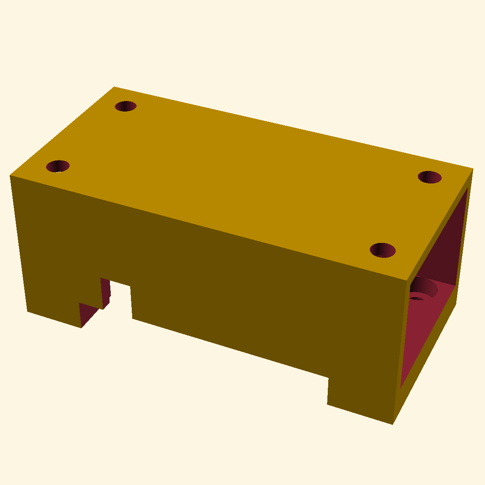 |
// Version: 0.08
// Kirjeldus: Pealt kinnine kaitsekarp juhtmeavaga kinnituskõrvas
// Muudatused: Ühte otsa lisatud 10mm laiune sisselõige juhtmete jaoks
// --- Parameetrid ---
inner_length = 40;
outer_width = 30;
outer_length = 60;
height = 25;
wall_thickness = 2;
ear_thickness = 5;
mount_hole_dist_x = 50;
mount_hole_dist_y = 20;
m3_hole_dia = 3.4;
m3_head_dia = 6.0;
m3_head_depth = 3.0;
side_cutout_w = 40.4;
side_cutout_h = 5;
wire_cutout_width = 12; // Juhtmeava laius otsas
$fn = 64;
difference() {
union() {
// Karbi väliskuju
translate([-outer_length/2, -outer_width/2, 0])
cube([outer_length, outer_width, height]);
}
// 1. Siseosa tühjendamine (Pealt kinnine)
translate([-inner_length/2, -outer_width/2 + wall_thickness, -0.1])
cube([inner_length, outer_width - 2*wall_thickness, ear_thickness +0.2]);
// cutouts for reset ja boot buttons
translate([-outer_length/2 +14, -outer_width/2 - 0.1, ear_thickness-0.1])
cube([5, outer_width + 0.2, 6 + 0.1]);
// 2. Avatud otsad
translate([-mount_hole_dist_x, -outer_width/2 + wall_thickness, ear_thickness])
cube([mount_hole_dist_x * 2, outer_width - 2*wall_thickness, height - wall_thickness - ear_thickness]);
// 3. M3 kinnitusaugud ja süvendid
for (x = [-mount_hole_dist_x/2, mount_hole_dist_x/2]) {
for (y = [-mount_hole_dist_y/2, mount_hole_dist_y/2]) {
translate([x, y, -1])
cylinder(d = m3_hole_dia, h = height + 2);
translate([x, y, ear_thickness - m3_head_depth])
cylinder(d = m3_head_dia, h = m3_head_depth + 0.1);
}
}
// 4. TÄIELIK ALUMINE VÄLJALÕIGE (Keskosa)
translate([-side_cutout_w/2, -outer_width/2 - 1, -0.1])
cube([side_cutout_w, outer_width + 2, side_cutout_h + 0.1]);
// 5. JUHTMEAVA ÜHES OTSAS (10mm laiune sälk)
// Lõikame vasakpoolse kinnituskõrva keskelt läbi
translate([-outer_length/2 - 0.1, -wire_cutout_width/2, -0.1])
cube([(outer_length - side_cutout_w)/2 + 0.2, wire_cutout_width, ear_thickness + 0.2]);
} |
— |
|
DIN-Mount/WeMos-Mini.scad
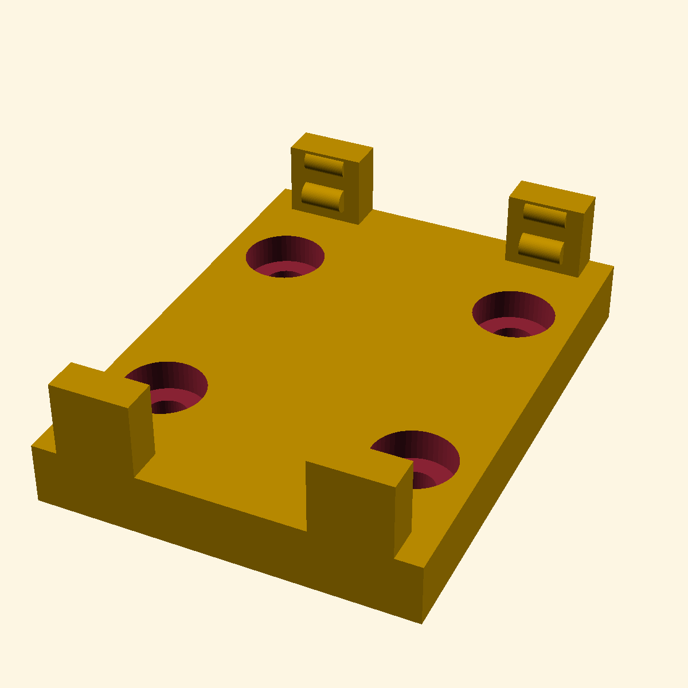 |
// PCB Spacer Plate - Wemos D1 Mini
// Version: 0.33
// Description: Fully centered geometry. Plate is exactly PCB width + margins.
// Bottom ledge: Flat surface facing UP. Top: Half-cylinder lock.
/* [Wemos D1 Mini PCB Dimensions] */
pcb_width = 25.6;
pcb_length = 34.2;
pcb_thickness = 1.0;
plate_thickness = 5.0;
edge_margin = 5;
/* [Clip Parameters] */
pcb_resting_height = 3.0;
clip_width = 3.5;
clip_wall_thickness = 2.9;
snap_dia = 2.0;
clip_margin = 1.3;
/* [Plate Mounting Holes] */
mount_hole_dia = 3.4;
mount_hole_spacing_y = 20; // Distance between holes on one side
cap_recess_dia = 6.5;
cap_recess_depth = 2.5;
/* [PCB Hardware] */
m3_bolt_dia = 3.4;
nut_dia = 6.3;
nut_depth = 3.0;
/* [Calculated Dimensions] */
//plate_w = pcb_width + (edge_margin * 2);
//plate_l = pcb_length + (edge_margin * 2);
//plate_w = pcb_width + edge_margin * 2;
plate_w = 30;
plate_l = 40;
//plate_l = pcb_length + (clip_wall_thickness * 2);
$fn = 50;
module dual_snap_clip(rotate_z) {
// Clips are positioned relative to the PCB edges
rotate([0, 0, rotate_z])
translate([0, pcb_length/2, plate_thickness])
union() {
// 1. VERTICAL POST (Inner face at Y=0 relative to translate)
translate([-clip_width*0.9, 0, 0])
cube([clip_width*1.8, clip_wall_thickness, pcb_resting_height + pcb_thickness + snap_dia]);
// 2. LOWER SUPPORT LEDGE (Flat surface facing UP)
translate([0, 0, pcb_resting_height - snap_dia/2])
rotate([0, 90, 0])
cylinder(h = clip_width, d = snap_dia, center = true);
// 3. UPPER SNAP LOCK (Half-cylinder facing IN)
translate([0, snap_dia/3, pcb_resting_height + pcb_thickness + snap_dia/2])
rotate([0, 90, 0])
cylinder(h = clip_width, d = snap_dia, center = true);
}
}
module wemos_d1_mini_v0_32() {
difference() {
// Base plate centered
translate([-plate_w/2, -plate_l/2, 0])
cube([plate_w, plate_l, plate_thickness]);
// Mounting holes - Centered logic
// Holes are placed at the side margins
//x_pos = plate_w/2 - 5.5; // Offset 2.5mm from outer edge
x_pos = 10; // Offset 2.5mm from outer edge
for (x = [-x_pos, x_pos]) {
for (y = [-mount_hole_spacing_y/2, mount_hole_spacing_y/2]) {
translate([x, y, -1])
cylinder(h = plate_thickness + 2, d = mount_hole_dia);
translate([x, y, plate_thickness - cap_recess_depth])
cylinder(h = cap_recess_depth + 0.1, d = cap_recess_dia);
}
}
}
// Corner Clips - Placed by rotating and translating from center
// We use a small offset to account for the clip width
x_off = pcb_width/2 - clip_width/2;
translate([x_off - clip_margin, 0, 0]) dual_snap_clip(0);
translate([-x_off + clip_margin, 0, 0]) dual_snap_clip(0);
translate([x_off - clip_margin, 0, 0]) dual_snap_clip(180);
translate([-x_off + clip_margin, 0, 0]) dual_snap_clip(180);
}
wemos_d1_mini_v0_32();
|
— |
|
Desk-Clamp-Hook/Desc-Clamp-Hook.scad
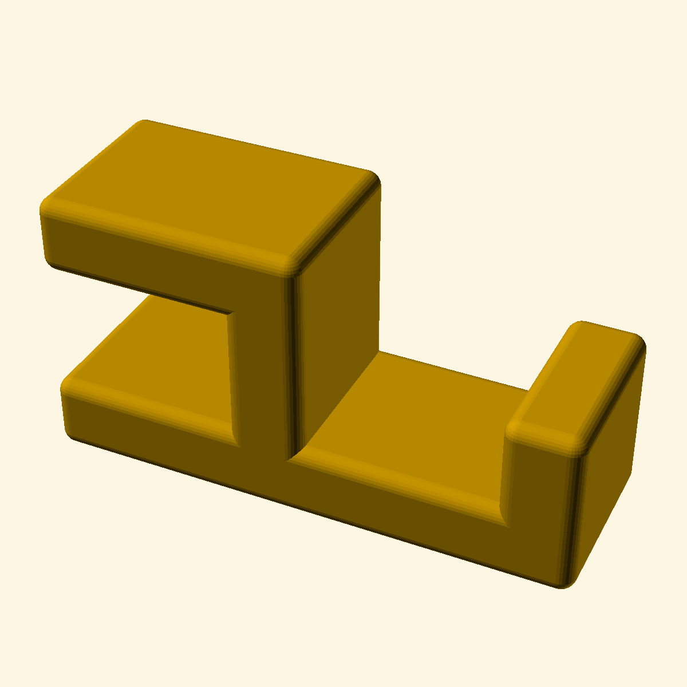 |
/*
* Headphone Hook for Desk Edge (C-Clamp style)
* Version: 0.23
* Description: Final coordinate fix.
* Corrected: Wall thickness (10mm), Desk gap (16.5mm), Hook gap (25mm).
*/
// --- Parameters ---
desk_thickness = 16.5;
jaw_depth = 25;
material_thickness = 10;
hook_base_internal = 25;
hook_lip_internal = 12.5;
chamfer_size = 2;
$fn = 32;
module desk_headphone_hook_v0_23() {
t = material_thickness;
w = 25;
c = chamfer_size;
// --- X-Coordinates (Calculated from internal gap) ---
// Sisevahe x1 ja x2 vahel on 25mm.
x_left_tip = -jaw_depth + c;
x0 = 0 + c; // Selja sisekülg
x1 = t - c; // Selja väliskülg
x2 = x1 + hook_base_internal + 2*c; // Konksu lõpp (tsentrite vahe 25+2c)
x3 = x2 + t - 2*c; // Huule väliskülg
// --- Z-Coordinates (Calculated from internal gap) ---
// Sisevahe z_desk_top ja z_desk_bot vahel on 16.5mm.
z_desk_top = 0 + c;
z_top_outer = t - c; // Ülemise plaadi välispind (10mm paksus)
z_desk_bot = -desk_thickness - c;
z_bot_outer = z_desk_bot - t + 2*c; // Alumise plaadi välispind (10mm paksus)
z_lip_top = z_bot_outer + t + hook_lip_internal - 2*c;
// Y-axis (Depth)
y_min = c;
y_max = w - c;
module profile_segment(points) {
hull() {
for (p = points) {
translate([p[0], y_min, p[1]]) sphere(r = c);
translate([p[0], y_max, p[1]]) sphere(r = c);
}
}
}
// --- CONSTRUCTION ---
// 1. TOP JAW (Laua peal) - Paksus: z_top_outer - z_desk_top + 2c = 10mm
profile_segment([[x_left_tip, z_desk_top], [x1, z_desk_top],
[x_left_tip, z_top_outer], [x1, z_top_outer]]);
// 2. BACK WALL (Selg) - Paksus: x1 - x0 + 2c = 10mm
profile_segment([[x0, z_desk_top], [x1, z_desk_top],
[x0, z_desk_bot], [x1, z_desk_bot]]);
// 3. BOTTOM BASE (Laua all + Konks) - Paksus: z_desk_bot - z_bot_outer + 2c = 10mm
profile_segment([[x_left_tip, z_desk_bot], [x3, z_desk_bot],
[x_left_tip, z_bot_outer], [x3, z_bot_outer]]);
// 4. HOOK LIP (Konksu ots)
profile_segment([[x2, z_desk_bot], [x3, z_desk_bot],
[x2, z_lip_top], [x3, z_lip_top]]);
}
// Render
desk_headphone_hook_v0_23(); |
— |
|
GalaxyTab2Active-Wall-Mount/GalaxyTab2Active-Wall-Mount.scad
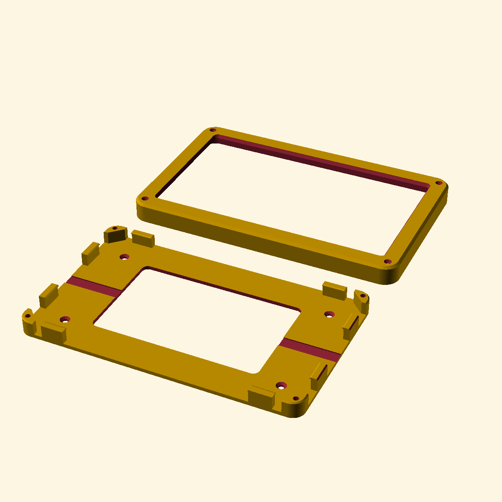 |
// =========================================================
// GALAXY TAB 2 ACTIVE WALL MOUNT - FULLY COMMENTED
// =========================================================
// --- 1. PHYSICAL TABLET DIMENSIONS ---
tab_w = 215; // Real width of Galaxy Tab 2 Active (Landscape)
tab_h = 128; // Real height of tablet
tab_d = 10.5; // Thickness of tablet body
// --- 2. ENCLOSURE GEOMETRY & TOLERANCES ---
base_plate_t = 3; // Thickness of the floor attached to the wall
wall_t = 3; // Thickness of the outer lid shell
clip_t = 5; // Internal clip width holding the tablet in place
lip_size = 6; // Screen overlap (bezel cover) on the lid
clearance = 1.0; // Extra wiggle room inside the shell for the tablet
lid_gap = 0.2; // Precision gap between base and lid for a snug fit
rounding_r = 10; // Main corner radius for the whole enclosure
edge_smoothness = 2.0; // Radius of the comfort bevel on the front of the lid
viewport_r = 4; // Internal corner radius of the screen cutout
// --- 3. CABLE ROUTING SETTINGS ---
cable_groove_w = 10; // Width of the exit channel for the charging lead
cable_groove_depth = 1; // Depth cut into the 3mm floor (leaves 2mm solid)
// --- 4. HARDWARE & MOUNTING SPECS ---
base_screw_hole = 4.2; // Hole size for M3 Brass Heat-Set Inserts
lid_screw_hole = 3.4; // Clearance hole for M3 screw shank
head_diam = 6.5; // M3 Countersink head diameter
hole_edge_dist = 6; // Distance from the outer edge to screw center
pillar_size = 14; // Size of the corner pillars holding the lid screws
chamfer_inner = 10; // Interior relief to clear tablet corners
chamfer_outer = 1; // Leading edge chamfer to help the lid slide on
mount_hole_d = 4.5; // Wall screw shank diameter
mount_head_d = 9.0; // Wall screw head diameter (countersink)
mount_inset = 25; // Wall mounting holes distance from corners
// --- 5. PINHOLE CONFIGURATION (TOP-LEFT FOCUS) ---
enable_pinhole = 1; // Set to 0 to remove the pinhole entirely
pinhole_dia = 1.5; // 1.5mm fits a standard paperclip
pin_on_short_side = false; // Set to true for Left/Right sides | false for Top/Bottom
pin_corner = [0, 1]; // [0,1] refers to the Top-Left corner of the tablet
pin_offset_dist = 40; // Measurement from top-left corner toward the right
pin_z_height = 5.25; // Height from back of tablet (usually tab_d / 2)
// --- 6. DERIVED CALCULATIONS (INTERNAL LOGIC) ---
inner_w = tab_w + clearance;
inner_h = tab_h + clearance;
outer_w = inner_w + (clip_t * 2);
outer_h = inner_h + (clip_t * 2);
total_depth = base_plate_t + tab_d;
// External footprint of the front cover (lid)
l_ext_w = outer_w + lid_gap + (wall_t * 2);
l_ext_h = outer_h + lid_gap + (wall_t * 2);
// Offset Anchor: Locates the exact [0,0] corner of the tablet inside the enclosure
origin_off_x = wall_t + lid_gap/2 + clip_t + clearance/2;
origin_off_y = wall_t + lid_gap/2 + clip_t + clearance/2;
// Calculate Absolute X: Adds offset to the origin anchor
calc_pin_x = (pin_on_short_side) ?
((pin_corner[0] == 0) ? wall_t/2 : l_ext_w - wall_t/2) :
((pin_corner[0] == 0) ? origin_off_x + pin_offset_dist : origin_off_x + tab_w - pin_offset_dist);
// Calculate Absolute Y: Determines if the hole is on the top or bottom wall
calc_pin_y = (pin_on_short_side) ?
((pin_corner[1] == 0) ? origin_off_y + pin_offset_dist : origin_off_y + tab_h - pin_offset_dist) :
((pin_corner[1] == 1) ? l_ext_h - wall_t/2 : wall_t/2);
calc_pin_z = base_plate_t + pin_z_height;
// --- 7. UTILITY MODULES ---
// Creates a 3D block with rounded corners via hull() of 4 cylinders
module rounded_rect(w, h, r, z) {
linear_extrude(height = z)
hull() {
translate([r, r]) circle(r = r, $fn=64);
translate([w-r, r]) circle(r = r, $fn=64);
translate([r, h-r]) circle(r = r, $fn=64);
translate([w-r, h-r]) circle(r = r, $fn=64);
}
}
// Internal clips that hold the tablet against the base floor
module oriented_clip(pos, size, dir, h, lip, c_out) {
translate([pos[0], pos[1], base_plate_t])
difference() {
union() {
cube([size[0], size[1], h]);
// The "lip" that catches the edge of the tablet
translate([0, 0, h - 1.5])
hull() {
cube([size[0], size[1], 1.5]);
translate([dir[0]*lip, dir[1]*lip, 0.5])
cube([size[0], size[1], 0.5]);
}
}
// Angled relief to make sliding the lid on easier
if (c_out > 0) {
translate([-dir[0]*size[0], -dir[1]*size[1], h - c_out])
rotate([dir[1]*45, -dir[0]*45, 0])
translate([-size[0], -size[1], 0])
cube([size[0]*4, size[1]*4, c_out*2]);
}
}
}
// 2D shape for the corner pillars (includes inner chamfer for tablet clearance)
module chamfered_pillar_shape(s, c) {
polygon(points=[[0,0], [s,0], [s, s-c], [s-c, s], [0,s]]);
}
// --- 8. BASE COMPONENT ---
module base() {
difference() {
union() {
// Main floor plate
rounded_rect(outer_w, outer_h, rounding_r, base_plate_t);
// Corner Pillars assembly
intersection() {
hull() {
rounded_rect(outer_w, outer_h, rounding_r, total_depth - chamfer_outer);
translate([chamfer_outer, chamfer_outer, total_depth - 0.1])
rounded_rect(outer_w - chamfer_outer*2, outer_h - chamfer_outer*2, max(0.1, rounding_r - chamfer_outer), 0.1);
}
union() {
translate([0,0,0]) linear_extrude(total_depth) chamfered_pillar_shape(pillar_size, chamfer_inner);
translate([outer_w, 0, 0]) mirror([1,0,0]) linear_extrude(total_depth) chamfered_pillar_shape(pillar_size, chamfer_inner);
translate([0, outer_h, 0]) mirror([0,1,0]) linear_extrude(total_depth) chamfered_pillar_shape(pillar_size, chamfer_inner);
translate([outer_w, outer_h, 0]) mirror([1,1,0]) linear_extrude(total_depth) chamfered_pillar_shape(pillar_size, chamfer_inner);
}
}
// Array of tablet clips
c_len = 18; c_off_s = 30; c_off_tb = 21;
oriented_clip([0, c_off_s], [clip_t, c_len], [1, 0], tab_d, 1.2, chamfer_outer);
oriented_clip([0, outer_h - c_off_s - c_len], [clip_t, c_len], [1, 0], tab_d, 1.2, chamfer_outer);
oriented_clip([outer_w - clip_t, c_off_s], [clip_t, c_len], [-1, 0], tab_d, 1.2, chamfer_outer);
oriented_clip([outer_w - clip_t, outer_h - c_off_s - c_len], [clip_t, c_len], [-1, 0], tab_d, 1.2, chamfer_outer);
oriented_clip([c_off_tb, 0], [c_len, clip_t], [0, 1], tab_d, 1.2, chamfer_outer);
oriented_clip([outer_w - c_off_tb - c_len, 0], [c_len, clip_t], [0, 1], tab_d, 1.2, chamfer_outer);
oriented_clip([c_off_tb, outer_h - clip_t], [c_len, clip_t], [0, -1], tab_d, 1.2, chamfer_outer);
oriented_clip([outer_w - c_off_tb - c_len, outer_h - clip_t], [c_len, clip_t], [0, -1], tab_d, 1.2, chamfer_outer);
}
// Large center cutout for cooling and wire access
opening_w = outer_w * 0.6; opening_h = outer_h * 0.6;
translate([(outer_w - opening_w)/2, (outer_h - opening_h)/2, -1])
rounded_rect(opening_w, opening_h, 5, base_plate_t + 2);
// Assembly screw holes for the Heat-Set Inserts
for(x = [hole_edge_dist, outer_w - hole_edge_dist]) for(y = [hole_edge_dist, outer_h - hole_edge_dist])
translate([x, y, -1]) cylinder(d=base_screw_hole, h=total_depth + 2, $fn=32);
// Wall Mounting screw holes (countersunk)
for(mx = [mount_inset, outer_w - mount_inset]) for(my = [mount_inset, outer_h - mount_inset]) {
translate([mx, my, -1]) cylinder(d=mount_hole_d, h=base_plate_t + 2, $fn=32);
translate([mx, my, base_plate_t - 1.5]) cylinder(d1=mount_hole_d, d2=mount_head_d, h=2, $fn=32);
}
// Parametric Cable Groove subtraction
translate([-1, outer_h/2 - cable_groove_w/2, base_plate_t - cable_groove_depth])
cube([outer_w + 2, cable_groove_w, cable_groove_depth + 1]);
}
}
// --- 9. LID COMPONENT ---
module lid() {
lid_hole_x = hole_edge_dist + wall_t + lid_gap/2;
lid_hole_y = hole_edge_dist + wall_t + lid_gap/2;
v_w = inner_w - (lip_size*2); v_h = inner_h - (lip_size*2);
v_x = wall_t + clip_t + lid_gap/2 + lip_size;
v_y = wall_t + clip_t + lid_gap/2 + lip_size;
difference() {
// Outer shell beveled hull
hull() {
rounded_rect(l_ext_w, l_ext_h, rounding_r + wall_t, 0.1);
translate([0, 0, total_depth + wall_t - edge_smoothness])
rounded_rect(l_ext_w, l_ext_h, rounding_r + wall_t, 0.1);
translate([edge_smoothness, edge_smoothness, total_depth + wall_t])
rounded_rect(l_ext_w - edge_smoothness*2, l_ext_h - edge_smoothness*2, max(0.1, rounding_r + wall_t - edge_smoothness), 0.1);
}
// Hollow center for the base plate assembly
translate([wall_t, wall_t, -1])
rounded_rect(outer_w + lid_gap, outer_h + lid_gap, rounding_r + lid_gap/2, total_depth + 1.1);
// Viewport window with beveled edges
hull() {
translate([v_x, v_y, total_depth + wall_t - 0.2]) rounded_rect(v_w, v_h, viewport_r, 0.5);
translate([v_x + edge_smoothness, v_y + edge_smoothness, total_depth - 0.5]) rounded_rect(v_w - edge_smoothness*2, v_h - edge_smoothness*2, max(0.1, viewport_r - edge_smoothness), 0.5);
}
translate([v_x + edge_smoothness, v_y + edge_smoothness, total_depth - 2]) rounded_rect(v_w - edge_smoothness*2, v_h - edge_smoothness*2, max(0.1, viewport_r - edge_smoothness), wall_t + 3);
// Subtraction for the Pinhole Access
if (enable_pinhole == 1) {
translate([calc_pin_x, calc_pin_y, calc_pin_z])
rotate([(pin_on_short_side ? 0 : 90), (pin_on_short_side ? 90 : 0), 0])
cylinder(d=pinhole_dia, h=40, center=true, $fn=24);
}
// Lid screw holes and countersinks
for(x = [lid_hole_x, l_ext_w - lid_hole_x]) for(y = [lid_hole_y, l_ext_h - lid_hole_y]) {
translate([x, y, -1]) cylinder(d=lid_screw_hole, h=total_depth + wall_t + 2, $fn=32);
translate([x, y, total_depth + wall_t - 2.5]) cylinder(d1=lid_screw_hole, d2=head_diam, h=3, $fn=32);
}
}
}
// --- 10. FINAL ASSEMBLY RENDER ---
base();
translate([0, outer_h + 30, 0]) lid(); |
— |
|
Headphone-Hook/Headphone-Hook.scad
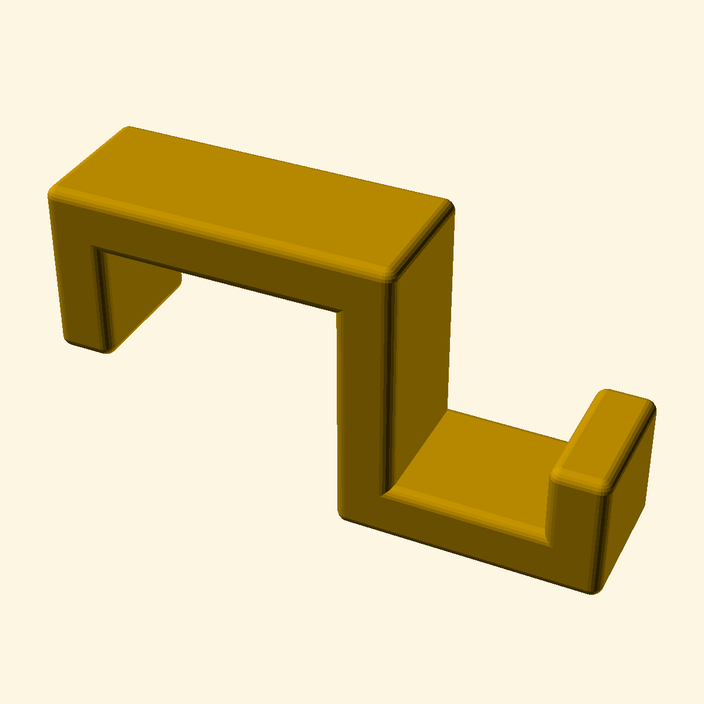 |
/*
* Headphone Hook for 40x40 Square Tube
* Version: 0.14
* Description: Chain-hull method to preserve right-angle internal clearance
* while ensuring zero gaps or grooves between parts.
*/
// --- Parameters ---
tube_size = 40;
bracket_depth = 25;
material_thickness = 10;
left_side_internal = 20;
hook_base_internal = 25;
hook_lip_internal = 12.5;
chamfer_size = 2;
$fn = 24;
// Helper module: Creates a chamfered segment between two boxes
// This ensures that the transition is a single solid mass.
module connected_segment(p1, p2, size1, size2) {
c = chamfer_size;
hull() {
// Box 1 corners
for(x=[p1.x+c, p1.x+size1.x-c], y=[p1.y+c, p1.y+size1.y-c], z=[p1.z+c, p1.z+size1.z-c])
translate([x,y,z]) sphere(r=c);
// Box 2 corners
for(x=[p2.x+c, p2.x+size2.x-c], y=[p2.y+c, p2.y+size2.y-c], z=[p2.z+c, p2.z+size2.z-c])
translate([x,y,z]) sphere(r=c);
}
}
module headphone_hook() {
t = material_thickness;
w = bracket_depth;
// Coordinates for exact internal clearance
x_left = 0;
x_tube_start = t;
x_tube_end = t + tube_size;
x_hook_start = x_tube_end + t;
x_hook_end = x_hook_start + hook_base_internal;
x_total = x_hook_end + t;
z_top = 0;
z_top_in = -t;
z_left_bot = z_top_in - left_side_internal;
z_right_bot = z_top_in - tube_size;
z_lip_top = z_right_bot + t + hook_lip_internal;
// --- Piece by Piece Construction with Overlap Hulling ---
// 1. Top Plate (main connector)
connected_segment([x_left, 0, z_top_in], [x_left, 0, z_top_in],
[x_hook_start, w, t], [x_hook_start, w, t]);
// 2. Left Wall -> Top Plate (Hulled together to bridge the gap)
connected_segment([x_left, 0, z_left_bot], [x_left, 0, z_top_in],
[t, w, left_side_internal], [t, w, t]);
// 3. Right Wall -> Top Plate
connected_segment([x_tube_end, 0, z_right_bot], [x_tube_end, 0, z_top_in],
[t, w, tube_size], [t, w, t]);
// 4. Hook Base -> Right Wall
connected_segment([x_tube_end, 0, z_right_bot], [x_hook_start, 0, z_right_bot],
[t, w, t], [hook_base_internal + t, w, t]);
// 5. Hook Lip -> Hook Base
connected_segment([x_hook_end, 0, z_right_bot], [x_hook_end, 0, z_right_bot],
[t, w, t + hook_lip_internal], [t, w, t + hook_lip_internal]);
}
headphone_hook(); |
— |
|
IKEA-BROGRUND-Sloped-Washer/IKEA-BROGRUND-Sloped-Washer.scad
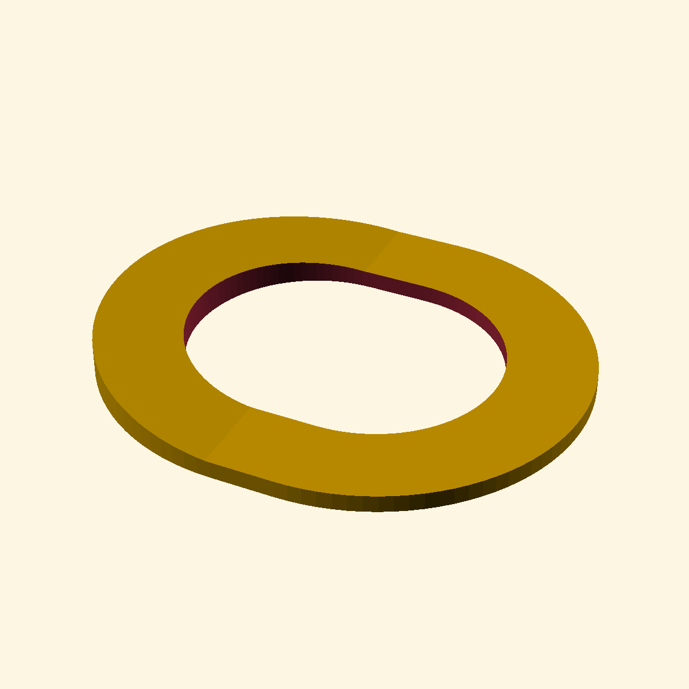 |
// IKEA BROGRUND Faucet Custom Washer
// Version: 0.04
// Date: 2026-01-18
/* [Dimensions] */
// Total length of the faucet base
base_length = 56.5;
// Width of the base (and diameter of the rounded ends)
base_width = 49.3;
// Minimum thickness (the flat part)
thickness_min = 2.0;
// Maximum thickness at the thick end
thickness_max = 4.0;
// Distance from the end where the thickening begins
wedge_length = 24.0;
// Wall thickness (width of the "ring")
wall_width = 10.0;
/* [Rendering Quality] */
$fn = 100;
module brogrund_washer_v0_04() {
difference() {
// 1. The Main Solid Body
intersection() {
linear_extrude(height = thickness_max + 1) {
washer_profile(0); // Outer profile
}
union() {
// Flat portion (from 24mm mark to far right)
translate([-(base_length/2) + wedge_length, -base_width/2, 0])
cube([base_length - wedge_length, base_width, thickness_min]);
// Sloped portion (from far left to 24mm mark)
hull() {
translate([-base_length/2, -base_width/2, 0])
cube([0.1, base_width, thickness_max]);
translate([-base_length/2 + wedge_length, -base_width/2, 0])
cube([0.1, base_width, thickness_min]);
}
}
}
// 2. The Central Opening
// Subtracted through the entire height
translate([0, 0, -1])
linear_extrude(height = thickness_max + 2) {
washer_profile(-wall_width); // Inner profile
}
}
}
// 2D Profile (Stadium Shape) with optional offset for the hole
module washer_profile(offset_val) {
// The length of the internal rectangle needs to be adjusted
// to maintain the total length after the offset is applied
internal_dist = (base_length - base_width);
offset(r = offset_val) {
hull() {
translate([-internal_dist/2, 0, 0])
circle(d = base_width);
translate([internal_dist/2, 0, 0])
circle(d = base_width);
}
}
}
// Render
brogrund_washer_v0_04(); |
— |
|
IKEA-LIBOJ-E2010-Phone-Stand/IKEA-LIBOJ-E2010-Phone-Stand.scad
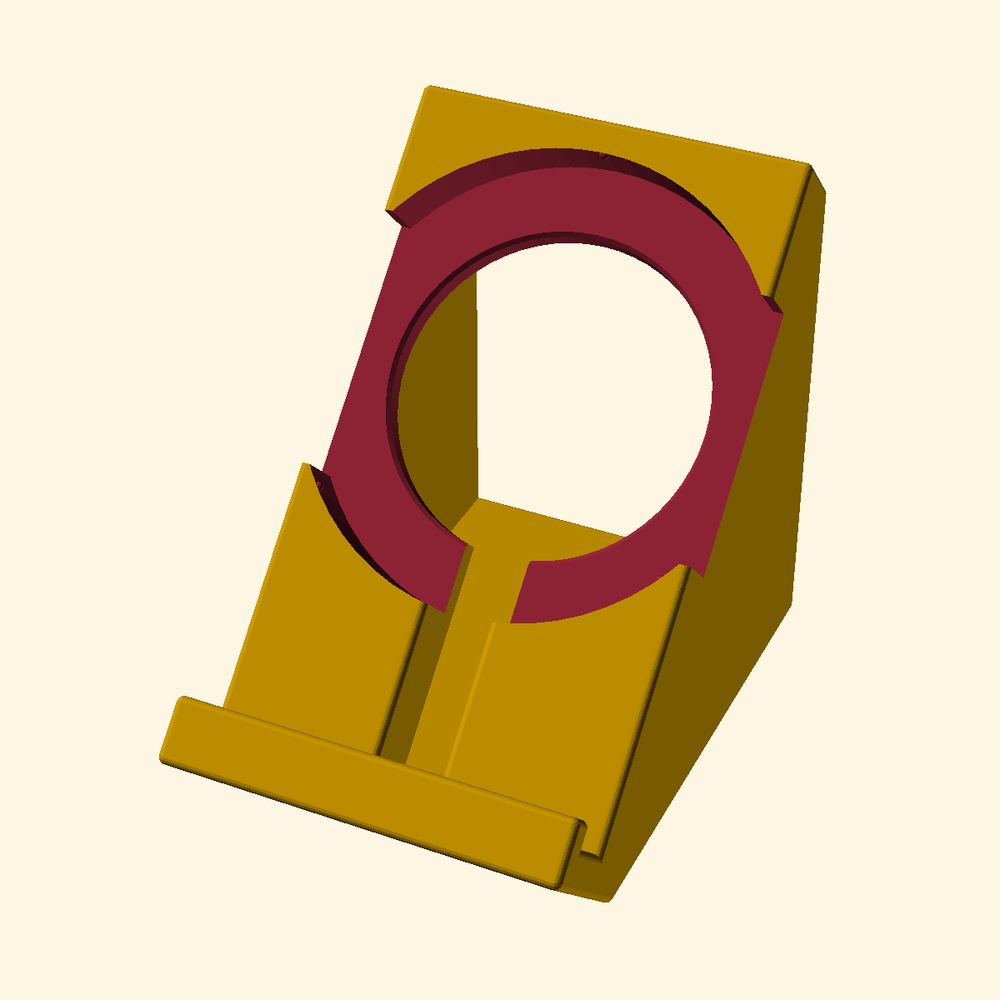 |
// =========================================================
// S25 ULTRA + IKEA LIBOJ CHARGER STAND (v117)
// Absolute Alignment Correction
// =========================================================
/* [Main Dimensions] */
// Total width of the stand
total_w = 80; // [60:120]
// Height from the phone's RESTING SURFACE to the coil center
// (Measure your phone from bottom edge to center of coil)
charger_center_h = 81.5; // [70:95]
// Diameter of the IKEA Liboj charger disk
charger_d = 91.8;
// Depth of the charger pocket
charger_t = 11.0;
// Angle of the stand
stand_angle = 45; // [30:75]
/* [Phone Fit] */
// Thickness allowed for phone + case
phone_t = 12.5;
// Height of the front retaining lip
lip_h = 10;
/* [Technical Details] */
// Diameter of the center hole
hole_d = 64;
// Width of the cable slot
cable_channel_w = 16;
// Smoothing radius (Minkowski)
round_r = 1.5;
// Detail level
$fn = 60;
/* [Hidden Calculations] */
// The phone sits on a base of thickness 'lip_base_t'
lip_base_t = 5;
// The internal Y-coordinate for the charger center must include the base thickness
// to ensure the phone's coil aligns with the charger.
internal_charger_y = charger_center_h + lip_base_t;
// Total backrest length calculated from the top of the charger
L_back = internal_charger_y + (charger_d / 2) + 5;
back_t = 15;
side_wall_t = 5;
chamfer_depth = 0.8;
chamfer_d = hole_d + (chamfer_depth * 2);
module stand() {
difference() {
// A. MAIN BODY
minkowski() {
stand_core_geometry();
sphere(r = round_r, $fn=15);
}
// B. CUTOUTS
rotate([90 - stand_angle, 0, 0]) {
// 1. CHARGER POCKET & NIPPLES
translate([0, internal_charger_y, back_t - charger_t + 0.1]) {
difference() {
cylinder(d = charger_d, h = charger_t + 10);
for(a = [90, 220, 320]) {
rotate([0, 0, a])
translate([charger_d/2 + 0.1, 0, charger_t - 1.2])
sphere(d = 2.0);
}
}
}
// 2. CENTER THROUGH-HOLE
translate([0, internal_charger_y, -15])
cylinder(d = hole_d, h = back_t + 30);
// 3. 45° CHAMFERS
translate([0, internal_charger_y, back_t - charger_t - chamfer_depth + 0.05])
cylinder(d1 = hole_d, d2 = chamfer_d, h = chamfer_depth + 0.05);
translate([0, internal_charger_y, -round_r])
cylinder(d1 = chamfer_d, d2 = hole_d, h = chamfer_depth + 0.05);
// 4. SIDE TRIMMING
translate([0, internal_charger_y, back_t - charger_t/2 + 0.1])
cube([total_w + 2 , charger_d - 40, charger_t], center=true);
}
}
}
module stand_core_geometry() {
s = sin(stand_angle);
c = cos(stand_angle);
base_l = L_back * c;
internal_w = total_w - (2 * round_r);
union() {
// Base plate (desk contact)
translate([-internal_w/2, 0, 0]) cube([internal_w, base_l, 4]);
// Back plate
rotate([90 - stand_angle, 0, 0])
translate([-internal_w/2, 0, 0]) {
difference() {
cube([internal_w, L_back, back_t - round_r]);
// Cable slot now accounts for the absolute height offset
translate([internal_w/2 - cable_channel_w/2, -0.1, -0.1])
cube([cable_channel_w, internal_charger_y + 5, back_t]);
}
}
// Phone Support Shelf (where the phone actually touches)
rotate([90 - stand_angle, 0, 0]) {
translate([-internal_w/2, 0, back_t - round_r])
cube([internal_w, lip_base_t, phone_t + 2*round_r]);
translate([-internal_w/2, 0, back_t + phone_t + round_r])
cube([internal_w, lip_h, 4]);
}
// Side Brackets
for(i = [-1, 1]) {
pos_x = (i == -1) ? -internal_w/2 : internal_w/2 - (side_wall_t - round_r);
translate([pos_x, 0, 0])
rotate([90, 0, 90])
linear_extrude(height = side_wall_t - round_r)
polygon(points=[[0, 0], [base_l, 0], [base_l, L_back * s], [0, 0]]);
}
}
}
stand(); |
— |
|
Makita-DCL180-Wall-Mount/Makita-DCL180-Wall-Mount.scad
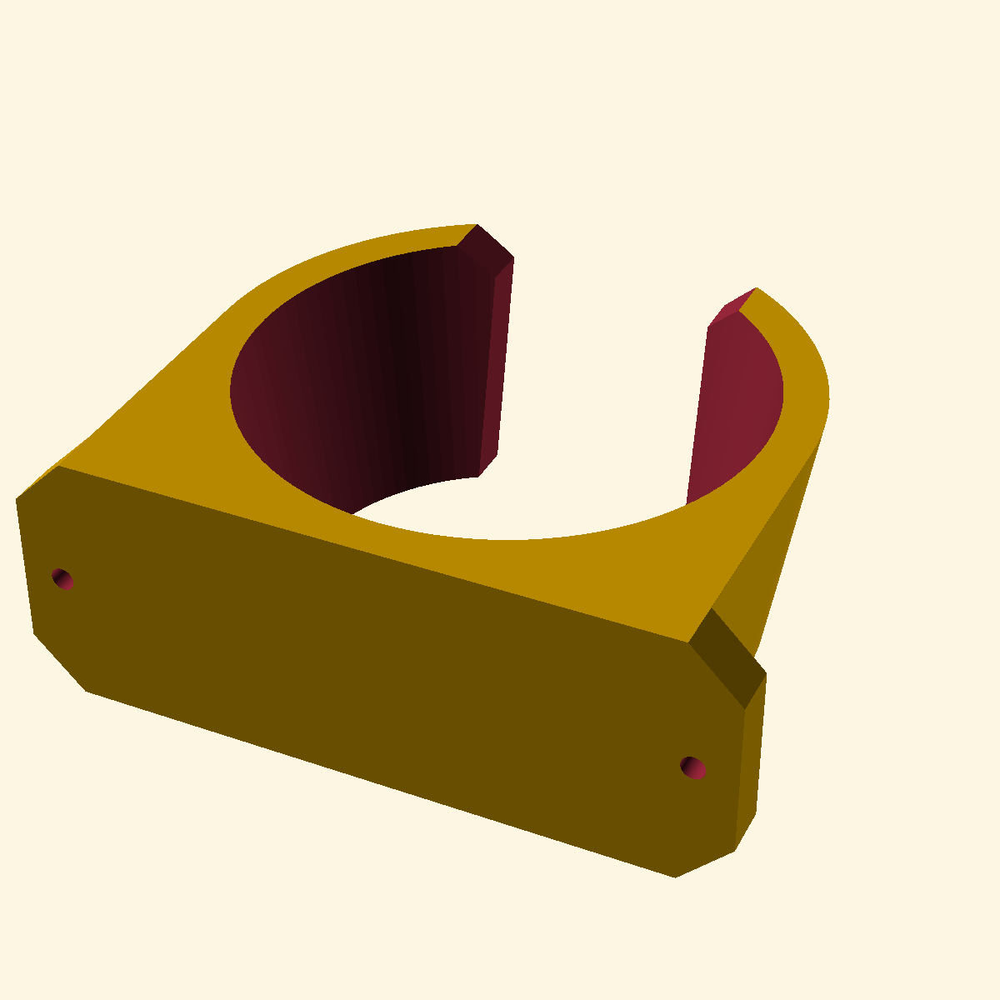 |
// Makita DCL180 Seinakinnitus
// Versioon: 1.23
// Taastatud stabiilne geomeetria: 10mm plaat, 1mm süvend, 120mm vahe
/* [Põhiparameetrid] */
hoidiku_korgus = 50;
avause_laius = 45;
seinapaksus = 8;
plaadi_paksus = 10;
faasi_suurus_plaat = 10;
sisestus_faas = 5;
// Sisemise koonuse parameetrid
koonus_alumine_d = 83;
koonus_ulemine_d = 100;
// Välimise koonuse arvutus
valis_alumine_d = koonus_alumine_d + (seinapaksus * 2);
valis_ulemine_d = koonus_ulemine_d + (seinapaksus * 2);
/* [Kinnitused] */
kruvi_ava_d = 4.5;
kruvi_pea_d = 10;
kruvi_pea_syvendi_sygavus = 1;
kruvide_vahe = 120;
kinnitusplaadi_laius = kruvide_vahe + 16;
/* [Peenus] */
$fn = 100;
difference() {
// PÕHIKORPUS
union() {
// 1. Välimine koonus
cylinder(h = hoidiku_korgus, d1 = valis_alumine_d, d2 = valis_ulemine_d);
// 2. Tagumine kinnitusplaat (kaheksanurkne profiil)
translate([0, -valis_ulemine_d/2 + plaadi_paksus/2, hoidiku_korgus/2])
rotate([90, 0, 0])
linear_extrude(height = plaadi_paksus, center = true)
hull() {
square([kinnitusplaadi_laius - 2*faasi_suurus_plaat, hoidiku_korgus], center = true);
square([kinnitusplaadi_laius, hoidiku_korgus - 2*faasi_suurus_plaat], center = true);
}
// 3. Eestvaates kooniline lisatugevdus
hull() {
translate([-valis_alumine_d/2, -valis_ulemine_d/2, 0])
cube([valis_alumine_d, valis_ulemine_d/2, 0.1]);
translate([-valis_ulemine_d/2, -valis_ulemine_d/2, hoidiku_korgus - 0.1])
cube([valis_ulemine_d, valis_ulemine_d/2, 0.1]);
}
}
// SISEMINE KOONILINE PESA
translate([0, 0, -1])
cylinder(h = hoidiku_korgus + 2, d1 = koonus_alumine_d, d2 = koonus_ulemine_d);
// C-KUJULINE AVAUS KOOS SISEMISE ÜLASERVA FAASIGA
union() {
translate([-avause_laius/2, 0, -1])
cube([avause_laius, valis_ulemine_d, hoidiku_korgus + 2]);
for(i = [-1, 1]) {
translate([i * avause_laius/2, 0, hoidiku_korgus])
rotate([0, i * 45, 0])
translate([-5, 0, -5])
cube([10, valis_ulemine_d, 10]);
}
}
// KRUVIAUGUD - Kontrollitud läbivus ja süvend
for(i = [-1, 1]) {
// Liigutame augu punkti, kus plaat lõppeb (seina poolne külg)
translate([i * kruvide_vahe/2, -valis_ulemine_d/2 + plaadi_paksus, hoidiku_korgus/2])
rotate([-90, 0, 0]) {
// Peenike ava läbib plaadi täielikult
translate([0, 0, -plaadi_paksus - 1])
cylinder(h = plaadi_paksus + 2, d = kruvi_ava_d);
// Süvend on 1mm sügavune ja algab täpselt plaadi välispinnalt
translate([0, 0, -kruvi_pea_syvendi_sygavus])
cylinder(h = kruvi_pea_syvendi_sygavus + 0.1, d = kruvi_pea_d);
}
}
} |
— |
|
Minecraft-Keychain/Minecraft-Keychain.scad
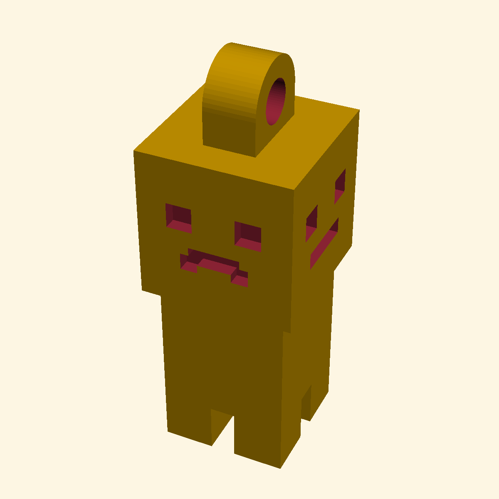 |
/*
* Emotional Communication Keychain (Surprised Update)
* Version: 0.16
*/
$fn = 64;
// --- Parameters ---
body_w = 15;
body_d = 15;
total_h = 40;
head_size = 18;
leg_h = 6;
leg_w = 6;
attach_w = 6;
attach_d = 10;
attach_h = 4;
hole_r = 2.5;
// --- Calculated Z-Heights ---
body_h = total_h - head_size - leg_h;
z_leg = leg_h / 2;
z_body = leg_h + (body_h / 2);
z_head = leg_h + body_h + (head_size / 2);
z_attach = leg_h + body_h + head_size;
f_y = -head_size / 2;
f_d = 3;
// --- Face Modules ---
module face_sad() {
translate([-4, f_y, 2]) cube([3, f_d, 3], center=true);
translate([4, f_y, 2]) cube([3, f_d, 3], center=true);
translate([0, f_y, -2.5]) cube([6, f_d, 2], center=true);
translate([-3, f_y, -3.5]) cube([2, f_d, 2], center=true);
translate([3, f_y, -3.5]) cube([2, f_d, 2], center=true);
}
module face_meh() {
translate([-4, f_y, 2]) cube([3, f_d, 3], center=true);
translate([4, f_y, 2]) cube([3, f_d, 3], center=true);
translate([0, f_y, -3]) cube([8, f_d, 2], center=true);
}
module face_smily() {
translate([-4, f_y, 2]) cube([3, f_d, 3], center=true);
translate([4, f_y, 2]) cube([3, f_d, 3], center=true);
translate([0, f_y, -4]) cube([6, f_d, 2], center=true);
translate([-3, f_y, -3]) cube([2, f_d, 2], center=true);
translate([3, f_y, -3]) cube([2, f_d, 2], center=true);
}
module face_surprised() {
// Tall eyes for a "wide-eyed" look
translate([-4, f_y, 3]) cube([3, f_d, 5], center=true);
translate([4, f_y, 3]) cube([3, f_d, 5], center=true);
// Tall rectangular "O" mouth
translate([0, f_y, -3]) cube([4, f_d, 5], center=true);
}
// --- Main Assembly ---
module comms_keychain() {
// 1. Four Legs
for (x = [-1, 1]) {
for (y = [-1, 1]) {
translate([x * (body_w/2 - leg_w/2), y * (body_d/2 - leg_w/2), z_leg])
cube([leg_w, leg_w, leg_h], center=true);
}
}
// 2. Body
translate([0, 0, z_body]) {
cube([body_w, body_d, body_h], center=true);
}
// 3. Head with 4 Moods
translate([0, 0, z_head]) {
difference() {
cube([head_size, head_size, head_size], center=true);
rotate([0, 0, 0]) face_sad();
rotate([0, 0, 90]) face_meh();
rotate([0, 0, 180]) face_smily();
rotate([0, 0, 270]) face_surprised();
}
}
// 4. Keyring Attachment
translate([0, 0, z_attach]) {
difference() {
union() {
translate([0, 0, attach_h / 2])
cube([attach_w, attach_d, attach_h], center=true);
translate([0, 0, attach_h])
rotate([0, 90, 0])
cylinder(h=attach_w, d=attach_d, center=true);
}
translate([0, 0, attach_h])
rotate([0, 90, 0])
cylinder(h=attach_w + 2, r=hole_r, center=true);
}
}
}
comms_keychain(); |
— |
| Monitor-Nametag/Monitor-Nametag.scad | /*
* Monitor Name Tag - Birthday Gift for Andri
* Version: 0.10
* Description: T-profile with rounded corners on both vertical and horizontal parts.
* Recessed (engraved) text.
*/
// --- Parameetrid ---
tekst = "Proudly Assisted by Juta";
sildi_korgus = 20;
lip_sygavus = 20;
alumine_aste = 3;
seina_paksus = 3;
teksti_suurus = 7.5;
fondi_stiil = "Inter:style=Bold";
kylje_padding = 10;
tahevahe = 1.05;
nurga_raadius = 2.5;
syvise_sygavus = 1.0;
$fn = 64;
// Laiuse arvutamine
sildi_laius = (len(tekst) * (teksti_suurus * 0.75) * tahevahe) + (kylje_padding * 2);
module ymar_ristkylik(l, p, k, r) {
hull() {
translate([r, 0, r]) rotate([-90, 0, 0]) cylinder(h=p, r=r);
translate([l-r, 0, r]) rotate([-90, 0, 0]) cylinder(h=p, r=r);
translate([r, 0, k-r]) rotate([-90, 0, 0]) cylinder(h=p, r=r);
translate([l-r, 0, k-r]) rotate([-90, 0, 0]) cylinder(h=p, r=r);
}
}
module horisontaalne_kandur(l, s, p, r) {
// Teeme kanduri, millel on ainult tagumised nurgad ümarad
hull() {
// Esimene serv (ühenduskoht), peab olema täislaiuses ja sirge
translate([0, 0, 0]) cube([l, 0.1, p]);
// Tagumised nurgad (ümarad)
translate([r, s-r, 0]) cylinder(h=p, r=r);
translate([l-r, s-r, 0]) cylinder(h=p, r=r);
}
}
module monitori_t_silt() {
difference() {
// PÕHIKUJU
union() {
// 1. Vertikaalne esiplaat (Ümarate nurkadega)
color("#222222")
ymar_ristkylik(sildi_laius, seina_paksus, sildi_korgus, nurga_raadius);
// 2. Horisontaalne kandur (Ümarate taganurkadega)
color("#333333")
translate([0, seina_paksus, alumine_aste])
horisontaalne_kandur(sildi_laius, lip_sygavus, seina_paksus, nurga_raadius);
}
// LÕIGATAV OSA (Süvistatud tekst)
translate([sildi_laius / 2, syvise_sygavus - 0.1, sildi_korgus / 2])
rotate([90, 0, 0])
linear_extrude(height = syvise_sygavus + 0.1)
text(tekst, size = teksti_suurus, font = fondi_stiil, halign = "center", valign = "center", spacing = tahevahe);
}
}
monitori_t_silt(); |
— |
|
Pencil-Postit-Sharpener/Pencil-Postit-Sharpener.scad
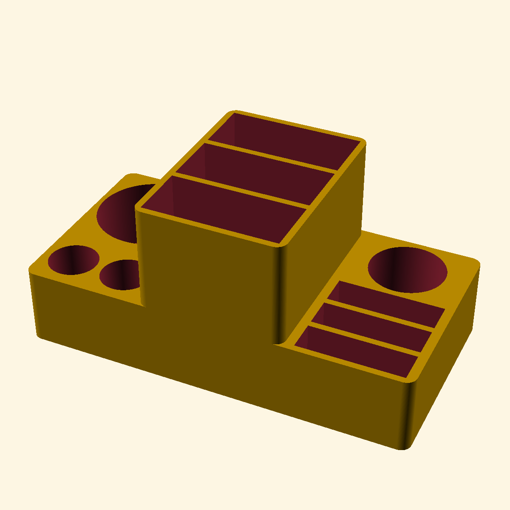 |
// --- DOKUMENTATSIOON ---
// Versioon: 1.2
// Kirjeldus: Siledate seintega hoidja kumeramate keskmise osa nurkadega.
// Muudatused:
// - Keskmise osa püstnurgad on kumerad (rounding = 4).
// - Esi- ja tagasein on joondatud ühtseks siledaks pinnaks.
// --- PARAMEETRID ---
$fn = 200;
height = 150; // Pikk mõõde (X-telg)
wall = 2.5;
rounding = 4;
post_it_w = 40;
post_it_d = 12;
z_high = 70;
z_low = 30;
sharpener_d = 42;
lipstick_d = 19;
cream_d = 29;
// --- JAOTUSE ARVUTUS ---
side_section_x = max(sharpener_d + wall * 2, post_it_w + wall * 2);
mid_x = height - (2 * side_section_x);
width = (3 * post_it_d) + (5 * wall) + cream_d;
// --- DISAIN ---
difference() {
// 1. ÜHTNE SILE VÄLISKORPUS
union() {
// ALUMINE OSA (Terve pikkus 150mm)
linear_extrude(height = z_low)
hull() {
translate([rounding, rounding]) circle(r=rounding);
translate([height-rounding, rounding]) circle(r=rounding);
translate([rounding, width-rounding]) circle(r=rounding);
translate([height-rounding, width-rounding]) circle(r=rounding);
}
// KESKMINE OSA (Kumerad püstnurgad)
// Hull operatsioon kahe nurgapostiga, et hoida esi- ja tagasein sirged
translate([side_section_x, 0, 0])
linear_extrude(height = z_high)
hull() {
// Eesmine serv (kumerad nurgad)
translate([rounding, rounding]) circle(r=rounding);
translate([mid_x - rounding, rounding]) circle(r=rounding);
// Tagumine serv (kumerad nurgad)
translate([rounding, width - rounding]) circle(r=rounding);
translate([mid_x - rounding, width - rounding]) circle(r=rounding);
}
}
// 2. PESADE VÄLJALÕIKAMINE
// VASAK OSA
translate([side_section_x / 2 - 11, wall + lipstick_d/2 + 2, wall])
cylinder(d = lipstick_d, h = z_low);
translate([side_section_x / 2 + 11, wall + lipstick_d/2 + 2, wall])
cylinder(d = lipstick_d, h = z_low);
translate([side_section_x / 2, width - (sharpener_d/2 + wall), wall])
cylinder(d = sharpener_d + 1, h = z_low);
// KESKOSA (Pliiatsid ristipidi)
inner_y = width - (wall * 2);
pencil_sub_d = (inner_y - (2 * wall)) / 3;
for (j = [0 : 2]) {
translate([side_section_x + wall, wall + j * (pencil_sub_d + wall), wall])
cube([mid_x - wall*2, pencil_sub_d, z_high + 1]);
}
// PAREM OSA
for (i = [0 : 2]) {
translate([side_section_x + mid_x + (side_section_x - post_it_w)/2, wall + i*(post_it_d + wall), wall])
cube([post_it_w, post_it_d, z_low + 1]);
}
translate([side_section_x + mid_x + side_section_x / 2, width - (cream_d/2 + wall), wall])
cylinder(d = cream_d, h = z_low + 1);
} |
— |
|
Pipe-Plug/Pipe-Cap.scad
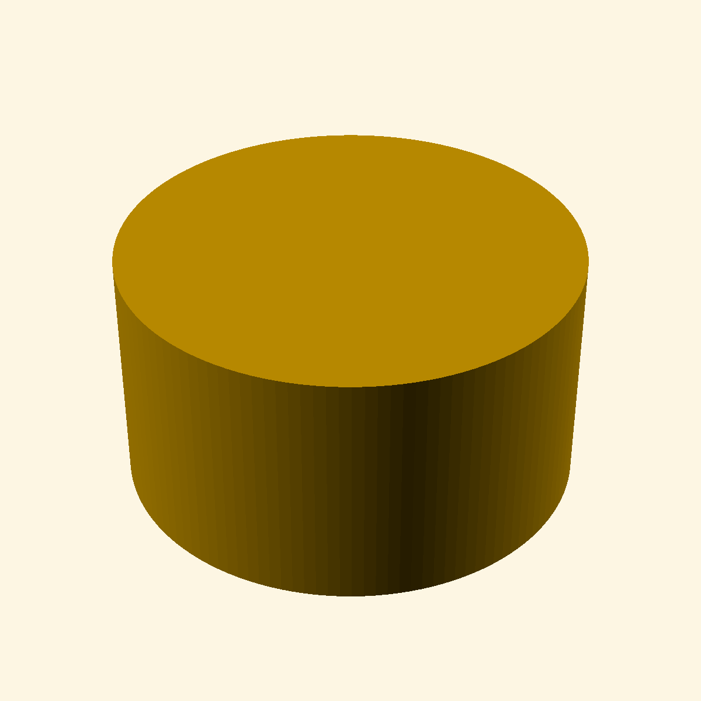 |
// Pipe Cap Model
// Version: 0.01
// Description: A parametric cap for a 50mm PVC pipe.
//
// Parameters
//
// The outer diameter of the pipe this cap should fit over
pipe_diameter = 50; // [mm]
// The total length/height of the cap
cap_length = 30; // [mm]
// The thickness of the side walls
wall_thickness = 3; // [mm]
// The thickness of the top surface
top_thickness = 3; // [mm]
// Tolerance for the fit. A positive value creates a looser fit.
// For a press-fit, 0.2 to 0.5 is a good starting range depending on the printer.
fit_tolerance = 0.4; // [mm]
// The amount by which the inner diameter decreases from the bottom to the top.
// This creates a taper on the inside for a snugger fit.
inner_taper = 1; // [mm]
// The resolution of the curves. Higher values create smoother circles.
resolution = 128;
//
// Model
//
$fn = resolution;
difference() {
// 1. Create the outer solid shape of the cap.
// The outer diameter is the pipe's diameter, plus tolerance, plus the thickness of two walls.
outer_diameter = pipe_diameter + fit_tolerance + (2 * wall_thickness);
cylinder(h = cap_length, d = outer_diameter, center = false);
// 2. Create the inner void and subtract it.
// The height is calculated to leave the specified top_thickness.
// The "+1" is a common technique to ensure a clean boolean subtraction.
inner_height = cap_length - top_thickness + 1;
// The inner diameter at the opening includes the tolerance.
inner_bottom_diameter = pipe_diameter + fit_tolerance;
// The inner diameter at the top is smaller to create the taper.
inner_top_diameter = inner_bottom_diameter - inner_taper;
// We don't need to translate this cylinder as both shapes start at z=0.
cylinder(h = inner_height, d1 = inner_bottom_diameter, d2 = inner_top_diameter, center = false);
}
|
— |
|
Pipe-Plug/Pipe-Plug.scad
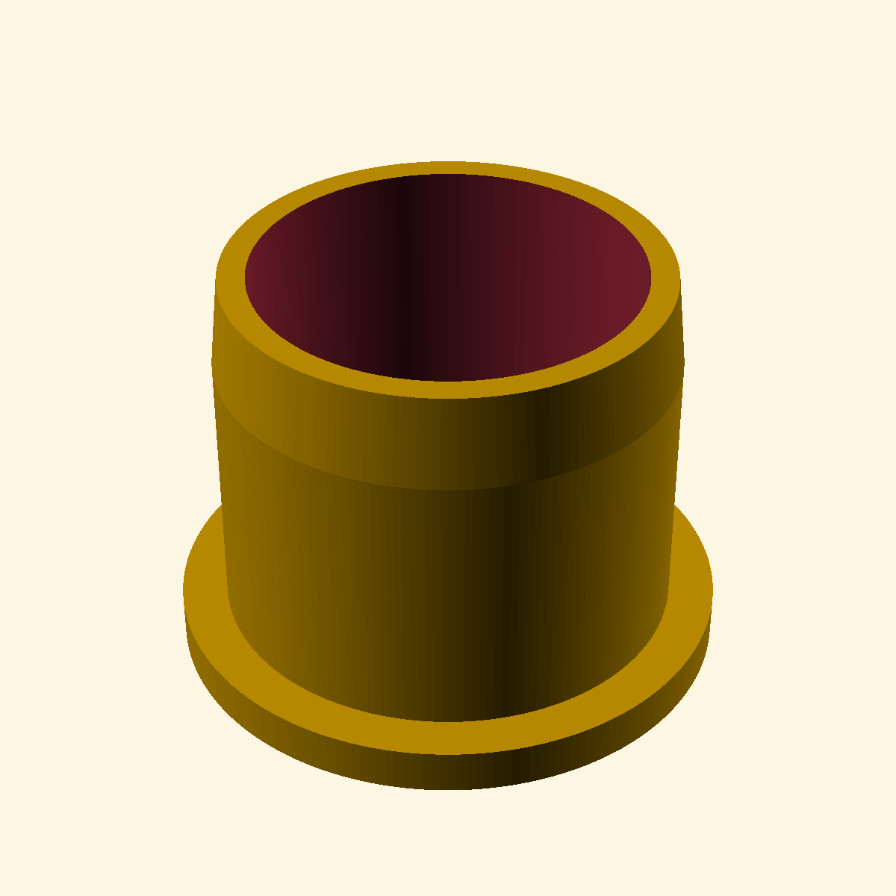 |
// File: Pipe-Plug.scad
// Version: v0.03
// Description: Parametric plug with a constant diameter hollow inside.
/* [Dimensions] */
// Outer Diameter of the plug body (mm). Should match the pipe ID.
plug_od = 50; // [10:200]
// Length of the part of the plug that goes inside the pipe (mm).
plug_length = 40; // [10:200]
// Diameter of the wider flange/stop (mm). Should be larger than pipe OD.
flange_od = 60; // [20:250]
// Thickness of the flange (mm).
flange_height = 5; // [1:50]
// Length of the tapered section at the insertion end (mm).
taper_length = 10; // [0:50]
// Diameter reduction at the tip of the taper (mm).
taper_reduction = 2; // [0:20]
// Wall thickness of the plug (mm).
wall_thickness = 4; // [1:20]
/* [Hidden] */
$fn = 200; // Fragment number for smoothness
module pipe_plug() {
// Calculate tip diameter for the outer shape
tip_od = plug_od - taper_reduction;
difference() {
// --- Create the outer, solid shape first ---
union() {
// Flange (stopper)
cylinder(d = flange_od, h = flange_height);
// Straight part of the plug body
translate([0, 0, flange_height])
cylinder(d = plug_od, h = plug_length - taper_length);
// Tapered part of the plug body
translate([0, 0, flange_height + plug_length - taper_length])
cylinder(d1 = plug_od, d2 = tip_od, h = taper_length);
}
// --- Create the inner cylindrical shape to be subtracted ---
// Calculate inner diameter
inner_d = plug_od - (2 * wall_thickness);
// Only proceed if the wall thickness is not too large
if (inner_d > 0) {
// Create a single cylinder starting from the top of the flange and
// extending slightly beyond the top of the plug (+1) to ensure a clean cut.
translate([0, 0, flange_height])
cylinder(d = inner_d, h = plug_length + 1);
}
}
}
// Render the final plug
pipe_plug();
|
— |
|
Pole-Hook/Pole-Hook.scad
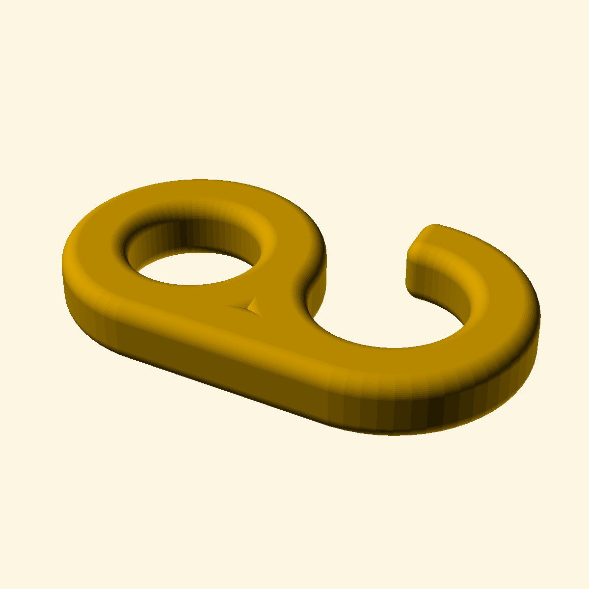 |
// --- INFO ---
/* [Project] */
// Parametric Heavy-Duty Double Hook
// Version: 1.6 (Restored & Optimized)
// Description: Massive hook with 15mm walls and 4mm rounding.
/* [Hook Dimensions] */
// Inner diameter of the top (closed) ring
d1_inner = 30; // [10:1:200]
// Inner diameter of the bottom (open) ring
d2_inner = 35; // [10:1:200]
// Wall thickness of the rings
wall_thickness = 15; // [2:1:50]
// Total height (thickness) of the object
height = 15; // [2:1:50]
// Radius for edge rounding
rounding_radius = 4; // [0.1:0.1:10]
/* [Advanced] */
// Resolution of the geometry
$fn = 60;
/* [Hidden] */
adj_h = height - (rounding_radius * 2);
adj_w = wall_thickness - (rounding_radius * 2);
r1_in = d1_inner / 2 + rounding_radius;
r1_out = r1_in + adj_w;
r2_in = d2_inner / 2 + rounding_radius;
r2_out = r2_in + adj_w;
// Distance: R2 outer edge matches R1 inner edge
distance = r1_in + r2_out;
// --- CONSTRUCTION ---
// Applying Minkowski at the top level to round all edges
minkowski() {
union() {
// 1. TOP RING (Closed)
difference() {
cylinder(r = r1_out, h = adj_h, center = true);
cylinder(r = r1_in, h = adj_h + 2, center = true);
}
// 2. BOTTOM RING (Open)
translate([distance, 0, 0])
difference() {
// Main ring body
difference() {
cylinder(r = r2_out, h = adj_h, center = true);
cylinder(r = r2_in, h = adj_h + 2, center = true);
}
// CUTOUT: 90-180 degrees (CCW rotation)
// Cut is performed inside Minkowski to ensure rounded ends
rotate([0, 0, 90])
translate([0, 0, -adj_h])
cube([r2_out + 10, r2_out + 10, adj_h * 2]);
}
// 3. STRAIGHT BRIDGE
// Connects the bottom-most points of both rings
hull() {
translate([0, -r1_out + adj_w/2, 0])
cube([0.1, adj_w, adj_h], center = true);
translate([distance, -r2_out + adj_w/2, 0])
cube([0.1, adj_w, adj_h], center = true);
}
}
// The rounding element
sphere(r = rounding_radius);
} |
— |
|
Pole-Mount-Rectangular/Pole-Mount-Rectangular.scad
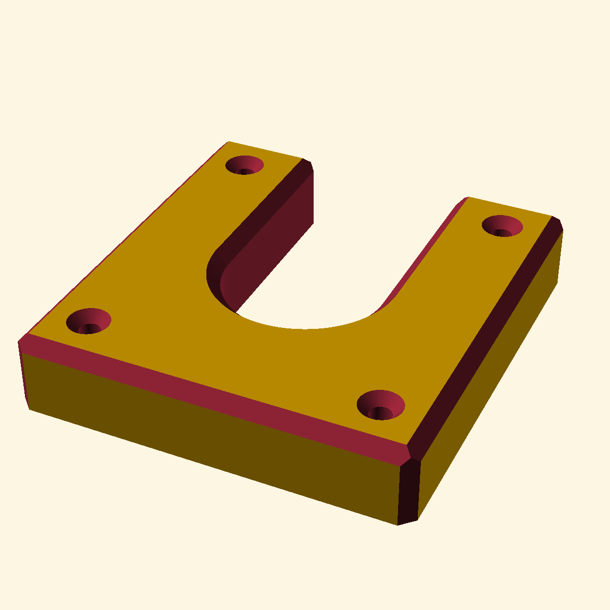 |
// --- PROJECT INFO ---
/* Wall-mounted Pipe Holder
Version: 4.17 (Thingiverse Customizer Ready)
Features: Chamfered edges, toggleable countersunk screw holes with adjustable offset.
*/
// --- USER PARAMETERS ---
/* [Main Dimensions] */
// Type of the mount
mount_type = "open"; // [open, closed]
// Diameter of the pipe (mm)
pipe_diameter = 30;
// Width of the block (X-axis)
block_width = 75;
// Height of the block (Y-axis - the longer dimension)
block_height = 80;
// Thickness of the block (Z-axis)
block_thickness = 15;
/* [Screw Holes] */
// Enable screw holes for mounting
add_screw_holes = true;
// Diameter of the screw shank (mm)
screw_diameter = 4;
// Diameter of the screw head (countersink) (mm)
screw_head_diameter = 8;
// Extra distance from the edge/chamfer (mm)
screw_offset_padding = 3.5;
/* [Finishing] */
// Universal chamfer size for all edges (mm)
universal_chamfer = 2.5;
/* [Technical] */
// Extra room for the pipe (mm)
tolerance = 0.5;
// Circle resolution
$fn = 100;
/* [Internal Calculations] */
inner_r = (pipe_diameter / 2) + tolerance;
c = universal_chamfer;
// --- MODEL CONSTRUCTION ---
difference() {
// 1. MAIN BLOCK
cube([block_width, block_height, block_thickness], center = true);
// 2. CHAMFER VERTICAL CORNERS (Z-axis edges)
for(x = [-(block_width/2), (block_width/2)])
for(y = [-(block_height/2), (block_height/2)])
{
translate([x, y, 0])
rotate([0, 0, 45])
cube([c * sqrt(2), c * sqrt(2), block_thickness + 2], center = true);
}
// 3. CHAMFER TOP EDGES (X and Y axis top edges)
for(y = [-(block_height/2), (block_height/2)])
{
translate([0, y, block_thickness/2])
rotate([45, 0, 0])
cube([block_width + 2, c * sqrt(2), c * sqrt(2)], center = true);
}
for(x = [-(block_width/2), (block_width/2)])
{
translate([x, 0, block_thickness/2])
rotate([0, 45, 0])
cube([c * sqrt(2), block_height + 2, c * sqrt(2)], center = true);
}
// 4. MAIN HOLE AND ITS CHAMFER
translate([0, 0, -block_thickness])
cylinder(r = inner_r, h = block_thickness * 2);
translate([0, 0, block_thickness/2 - c])
cylinder(r1 = inner_r, r2 = inner_r + c, h = c + 0.01);
// 5. SLOT CUTOUT (For "open" mount type)
if (mount_type == "open") {
translate([0, block_height/4 + 1, 0])
cube([inner_r * 2, block_height/2 + 2, block_thickness + 2], center = true);
for(i = [-1, 1]) {
translate([i * inner_r, block_height/2, 0])
rotate([0, 0, i * 45])
cube([c * sqrt(2), c * sqrt(2), block_thickness + 2], center = true);
}
for(i = [-1, 1]) {
translate([i * inner_r, block_height/4, block_thickness/2])
rotate([0, 45, 0])
cube([c * sqrt(2), block_height/2 + 2, c * sqrt(2)], center = true);
}
}
// 6. SCREW HOLES (Countersunk)
if (add_screw_holes) {
// Calculated offset based on your formula + variable padding
screw_x_offset = block_width/2 - (c + screw_head_diameter/2 + screw_offset_padding);
screw_y_offset = block_height/2 - (c + screw_head_diameter/2 + screw_offset_padding);
for(x = [-screw_x_offset, screw_x_offset])
for(y = [-screw_y_offset, screw_y_offset])
{
// Safety check: Don't place screws too close to the central hole or slot
if (abs(y) < (block_height/2 - 2) && abs(x) > (inner_r + 2)) {
translate([x, y, -block_thickness])
cylinder(d = screw_diameter, h = block_thickness * 2);
// Countersink (peitpea)
// Head depth is calculated to be flush with the top surface
translate([x, y, block_thickness/2 - (screw_head_diameter-screw_diameter)/2])
cylinder(d1 = screw_diameter, d2 = screw_head_diameter, h = (screw_head_diameter-screw_diameter)/2 + 0.1);
}
}
}
} |
— |
|
Pole-Mount-Round/Pole-Mount-Round.scad
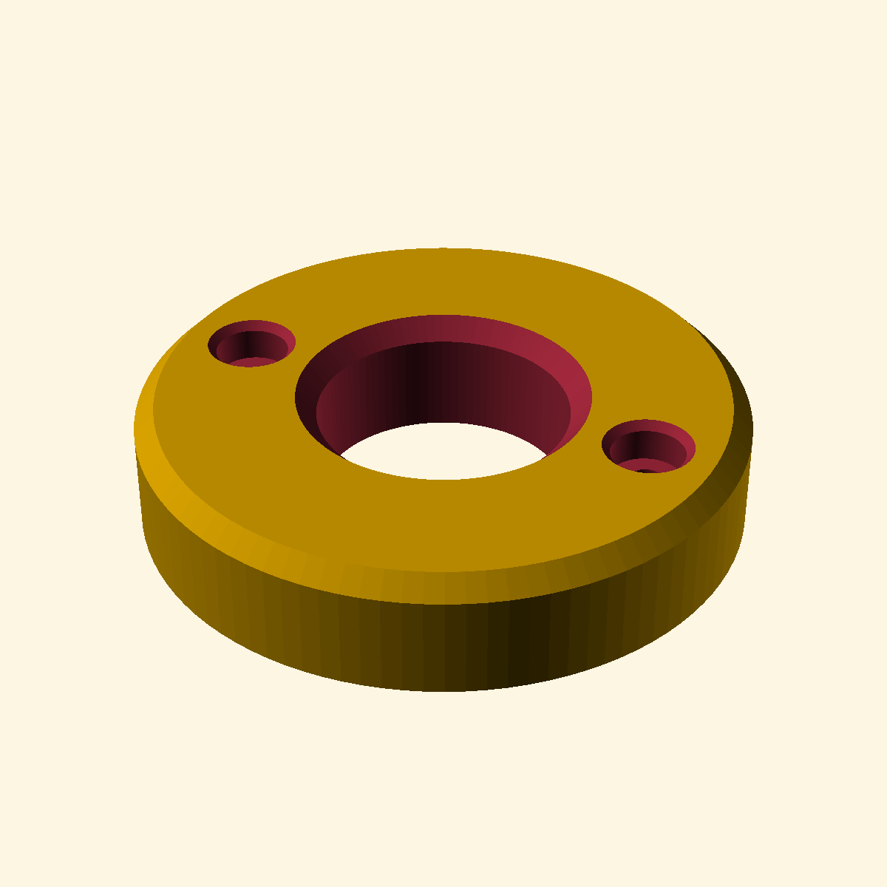 |
// --- PROJECT INFO ---
/* Circular Wall-mounted Pipe Holder
Version: 1.16
Features: Circular design, chamfered outer and inner edges, 2 countersunk screw holes.
*/
// --- USER PARAMETERS ---
/* [Main Dimensions] */
// Type of the mount
mount_type = "closed"; // [open, closed]
// Diameter of the pipe (mm)
pipe_diameter = 30;
// Total diameter of the disk
disk_diameter = 75;
// Thickness of the disk (Z-axis)
block_thickness = 15;
/* [Screw Holes] */
// Enable screw holes
add_screw_holes = true;
// Type of screw head hole
screw_head_type = "counterbore"; // [countersink, counterbore]
// Diameter of the screw shank (mm)
screw_diameter = 4.5;
// Diameter of the screw head (countersink or counterbore) (mm)
screw_head_diameter = 9.0;
// Depth of the counterbore (only used if screw_head_type is "counterbore")
counterbore_depth = 5;
// Extra distance from the chamfer edge (mm)
screw_offset_padding = 4;
// Depth of the dowel washer recess on the bottom side (mm)
dowel_washer_recess_depth = 1.2;
// Dowel washer recess calculations
dowel_washer_recess_diameter = 16;
dowel_washer_recess_radius = dowel_washer_recess_diameter / 2;
/* [Finishing] */
// Universal chamfer size for all edges (mm)
universal_chamfer = 2.5;
/* [Technical] */
// Extra room for the pipe (mm)
tolerance = 0.5;
// Circle resolution
$fn = 100;
/* [Internal Calculations] */
inner_r = (pipe_diameter / 2) + tolerance;
outer_r = disk_diameter / 2;
c = universal_chamfer;
// --- MODEL CONSTRUCTION ---
difference() {
// 1. MAIN DISK WITH OUTER CHAMFER
union() {
// Lower part (straight)
translate([0, 0, -block_thickness/2])
cylinder(r = outer_r, h = block_thickness - c);
// Upper part (chamfered)
translate([0, 0, block_thickness/2 - c])
cylinder(r1 = outer_r, r2 = outer_r - c, h = c);
}
// 2. MAIN HOLE AND ITS CHAMFER
translate([0, 0, -block_thickness])
cylinder(r = inner_r, h = block_thickness * 2);
// Internal top chamfer
translate([0, 0, block_thickness/2 - c])
cylinder(r1 = inner_r, r2 = inner_r + c, h = c + 0.01);
// 3. SLOT CUTOUT (For "open" mount type)
if (mount_type == "open") {
// Main rectangular cut
translate([0, outer_r/2, 0])
cube([inner_r * 2, outer_r + 2, block_thickness + 2], center = true);
// Vertical edge chamfers at the opening
for(i = [-1, 1]) {
// Finding the Y-coordinate where the inner circle meets the straight cut
translate([i * inner_r, outer_r - c, 0])
rotate([0, 0, i * 45])
cube([c * sqrt(2), c * sqrt(2), block_thickness + 2], center = true);
// Horizontal top edge chamfers along the slot
translate([i * inner_r, outer_r/2, block_thickness/2])
rotate([0, 45, 0])
cube([c * sqrt(2), outer_r + 2, c * sqrt(2)], center = true);
}
}
// 4. SCREW HOLES (2 holes on X-axis)
if (add_screw_holes) {
// Calculate safe distance from center
// It accounts for the outer chamfer and the screw head size
screw_x_dist = outer_r - c - (screw_head_diameter/2) - screw_offset_padding;
for(x = [-screw_x_dist, screw_x_dist])
{
// Screw shank
translate([x, 0, -block_thickness])
cylinder(d = screw_diameter, h = block_thickness * 2);
// Screw head (countersink or counterbore)
if (screw_head_type == "countersink") {
// Countersink (peitpea)
// Depth is half of the diameter difference for a 90-degree head
head_depth = (screw_head_diameter - screw_diameter) / 2;
translate([x, 0, block_thickness/2 - head_depth])
cylinder(d1 = screw_diameter, d2 = screw_head_diameter, h = head_depth + 0.1);
} else if (screw_head_type == "counterbore") {
// Counterbore (silindriline süvendus)
translate([x, 0, block_thickness/2 - counterbore_depth])
cylinder(d = screw_head_diameter, h = counterbore_depth + 0.1);
// Chamfer for the counterbore (1mm)
translate([0, 0, block_thickness/2 - 1])
translate([x, 0, 0])
cylinder(d1 = screw_head_diameter, d2 = screw_head_diameter + 2, h = 1.01);
}
// Dowel washer recess on the bottom side
// Starts inside the disk and extends to the bottom surface
translate([x, 0, -block_thickness/2 - 0.05])
cylinder(d = dowel_washer_recess_diameter, h = dowel_washer_recess_depth + 0.05);
}
}
}
|
— |
|
RJ45-Plug/RJ45-Plug.scad
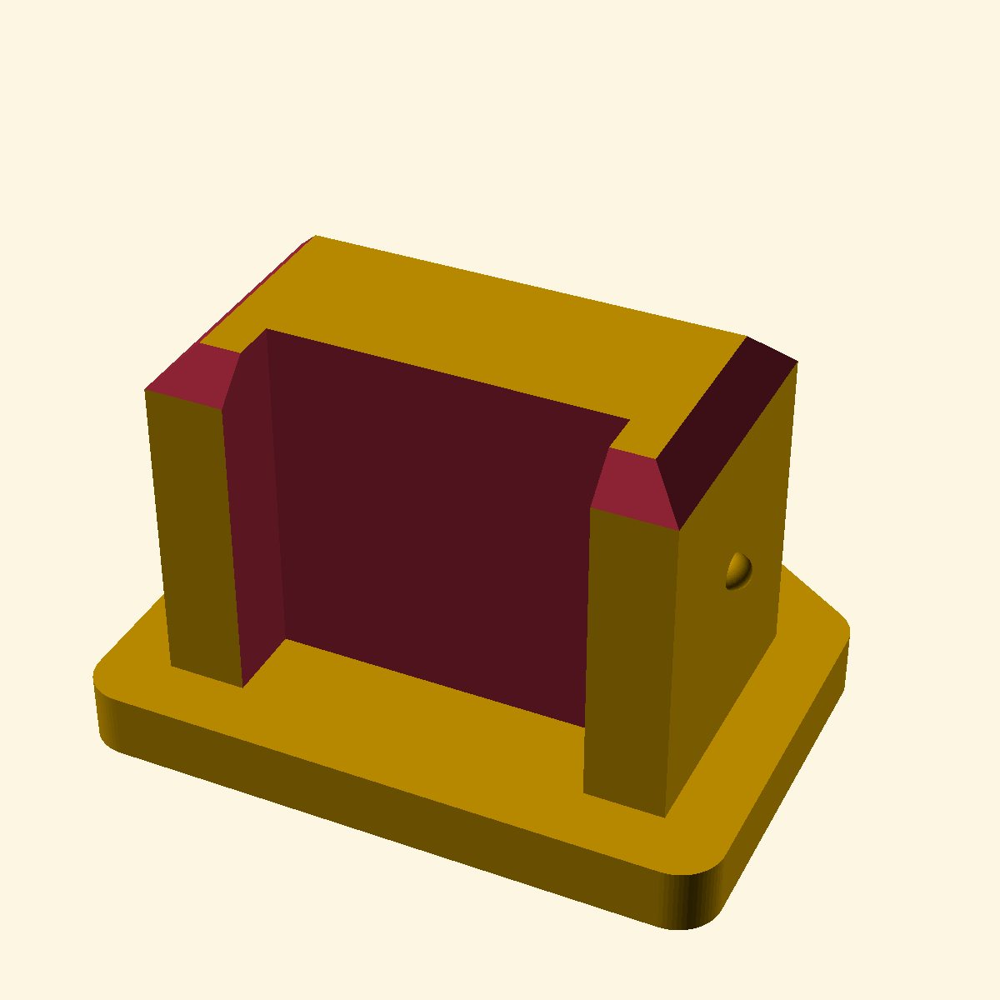 |
// --- PROJECT INFO ---
/* RJ45 Dust Cap with Clip Hole Coverage & Contact Relief
Version: 1.2
Description: Covers the port and clip notch, with a cutout for internal pins.
*/
// --- USER PARAMETERS ---
/* [Dimensions] */
// Width of the RJ45 plug (mm)
plug_width = 11.6;
// Height of the RJ45 plug (mm)
plug_height = 6.6;
// Depth into the socket (mm)
plug_depth = 8.0;
/* [Cap Settings] */
// Thickness of the outer plate (mm)
cap_thickness = 1.5;
// How much the cap overlaps the socket edges (mm)
cap_overhang = 1.5;
/* [Clip Cover] */
// Width of the clip notch cover (mm)
clip_cover_width = 6.5;
// Height of the clip notch cover (mm)
clip_cover_height = 4.0;
/* [Internal Relief] */
// Depth of the cutout for internal pins (mm)
contact_cutout_depth = 2.0;
// Width of the contact cutout (mm)
contact_cutout_width = 8.0;
/* [Friction & Fit] */
// Size of the friction bumps on sides (mm)
bump_radius = 0.4;
// Chamfer size for easy insertion (mm)
tip_chamfer = 1.2;
/* [Technical] */
$fn = 64;
// --- MODEL CONSTRUCTION ---
module rj45_full_coverage_cap() {
union() {
// 1. OUTER FACE PLATE
translate([0, 0, cap_thickness / 2])
hull() {
rounded_plate(plug_width + cap_overhang*2, plug_height + cap_overhang*2, cap_thickness, 1.0);
translate([0, (plug_height/2) + clip_cover_height/2, 0])
rounded_plate(clip_cover_width, clip_cover_height, cap_thickness, 0.5);
}
// 2. INSERTION PLUG
translate([0, 0, cap_thickness]) {
difference() {
// Main body
translate([-plug_width/2, -plug_height/2, 0])
cube([plug_width, plug_height, plug_depth]);
// --- CONTACT RELIEF CUTOUT ---
// This removes material where the socket pins are located
translate([-contact_cutout_width/2, -plug_height/2 - 0.1, 0])
cube([contact_cutout_width, contact_cutout_depth, plug_depth + 0.1]);
// Chamfered edges for smooth insertion
translate([0, -plug_height/2, plug_depth]) rotate([45, 0, 0]) cube([plug_width+1, tip_chamfer, tip_chamfer], center=true);
translate([0, plug_height/2, plug_depth]) rotate([45, 0, 0]) cube([plug_width+1, tip_chamfer, tip_chamfer], center=true);
translate([-plug_width/2, 0, plug_depth]) rotate([0, 45, 0]) cube([tip_chamfer, plug_height+1, tip_chamfer], center=true);
translate([plug_width/2, 0, plug_depth]) rotate([0, 45, 0]) cube([tip_chamfer, plug_height+1, tip_chamfer], center=true);
}
// Friction bumps
translate([plug_width/2, 0, plug_depth*0.5]) sphere(r=bump_radius);
translate([-plug_width/2, 0, plug_depth*0.5]) sphere(r=bump_radius);
}
}
}
// Helper module for rounded rectangles
module rounded_plate(w, h, thick, rad) {
hull() {
translate([(w/2)-rad, (h/2)-rad, 0]) cylinder(h=thick, r=rad, center=true);
translate([-(w/2)+rad, (h/2)-rad, 0]) cylinder(h=thick, r=rad, center=true);
translate([(w/2)-rad, -(h/2)+rad, 0]) cylinder(h=thick, r=rad, center=true);
translate([-(w/2)+rad, -(h/2)+rad, 0]) cylinder(h=thick, r=rad, center=true);
}
}
rj45_full_coverage_cap(); |
— |
|
Surface-Mount-Box/Surface-Mount-Box.scad
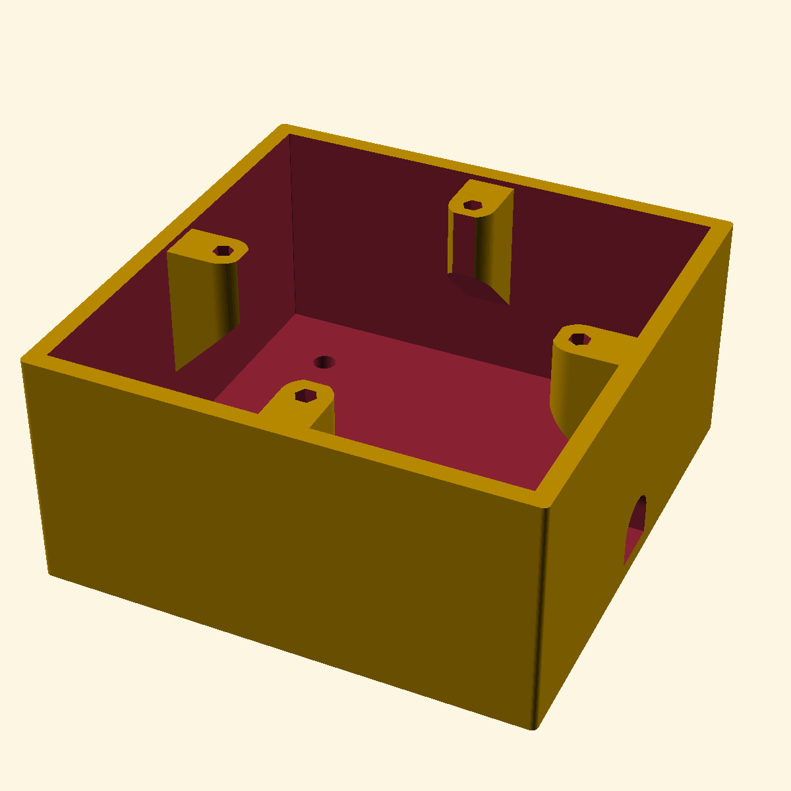 |
// --- Global Variables ---
l = 86; // Length (outer)
w = 86; // Width (outer)
h = 35; // Height (outer)
wall = 3; // Wall thickness
r = 4; // Corner radius
boss_hole = 3; // Diameter for switch mounting holes (Default: 3mm)
mounting_hole = 4; // Wall mouning hole diameter
delta = 1; // Clearance for trough holes
// Cable inlet D-Hole Dimension
hole = 9.5;
$fn = 64;
// Module for rounded box
module rounded_box(x, y, z, radius) {
hull() {
for(ix = [-1, 1], iy = [-1, 1]) {
translate([ix * (x/2 - radius), iy * (y/2 - radius), 0])
cylinder(r = radius, h = z);
}
}
}
difference() {
// 1. THE MAIN STRUCTURE (Shell + Pillars + Ribs)
union() {
// Outer Shell
difference() {
rounded_box(l, w, h, r);
// Interior Cavity
translate([0, 0, wall])
rounded_box(l - wall*2, w - wall*2, h + 1, max(0.1, r - wall));
}
// Add the BOSSES and RIBS
for(iy = [-1, 1]) {
// The Pillar (Solid)
translate([0, iy * 30, 0])
cylinder(h = h - 1, d = 8);
// The Rib (Connects pillar to wall)
translate([-4, (iy > 0) ? 30 : -w/2 + wall, 0])
cube([8, (w/2 - wall) - 30, h - 1]);
}
}
// 2. THE SUBTRACTIONS (Holes and Cutouts)
// Switch mounting holes
for(iy = [-delta, delta]) {
translate([0, iy * 30, 5])
cylinder(h = h, d = boss_hole);
}
// 4 Wall Mounting Holes
for(ix = [-1, 1], iy = [-1, 1]) {
translate([ix * (l/2-15), iy * (w/2-15), -delta])
cylinder(h = wall + delta*2, d = mounting_hole);
}
// C. D-SHAPED CABLE HOLE (On X+ axis)
translate([l/2+delta, 0, 0])
rotate([0, -90, 0])
linear_extrude(height = wall + delta*2) {
translate([wall, -hole/2])
square([hole/2, hole]);
translate([hole/2+wall, 0])
circle(d = hole);
}
} |
— |
|
Sushi-Roll-Cutter/Sushi-Roll-Cutter.scad
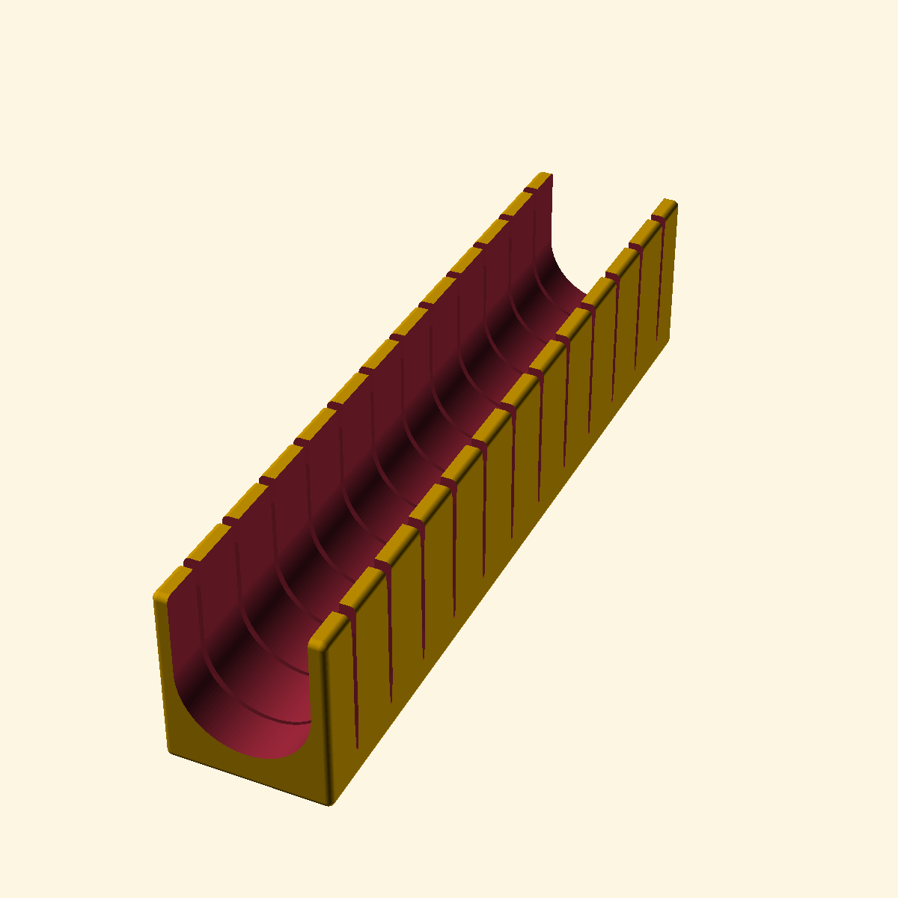 |
// Sushi Roll Cutting Guide
// Version: 0.08
/* [General Dimensions] */
// Total length of the sushi roll (mm)
roll_length = 250;
// Width of each sushi piece (mm)
piece_width = 20;
// Diameter of the sushi roll (mm)
roll_diameter = 40;
/* [Cradle Settings] */
// Thickness of the bottom base (mm)
bottom_thickness = 10;
// Extra height above the sushi roll to guide the knife before contact (mm)
guide_clearance = 5;
// Thickness of the side walls (mm)
wall_thickness = 5;
// Radius of edge rounding (mm)
edge_radius = 2;
/* [Cutting Slots] */
// Standard width of the knife slot in the middle section (mm)
slot_width = 2;
// Width of the slot at the very bottom (mm)
bottom_slot_width = 1;
// How much wider the top opening is
top_guide_extra_width = 2;
// Extra depth for the knife to cut into the bottom (to ensure clean cut)
cut_depth_clearance = 1;
/* [Hidden] */
$fn = 120;
num_pieces = floor(roll_length / piece_width);
total_cut_span = (num_pieces - 1) * piece_width;
start_offset = (roll_length - total_cut_span) / 2;
module sushi_cutter() {
total_width = roll_diameter + (2 * wall_thickness);
// Height ensures the wall guides the knife before it hits the top of the roll
total_height = bottom_thickness + roll_diameter + guide_clearance;
base_w = total_width - (2 * edge_radius);
base_l = roll_length - (2 * edge_radius);
base_h = total_height - (2 * edge_radius);
slot_start_z = bottom_thickness - cut_depth_clearance;
slot_total_h = (total_height - slot_start_z) + 2;
difference() {
// 1. Main Body
translate([-(total_width/2) + edge_radius, edge_radius, edge_radius])
minkowski() {
cube([base_w, base_l, base_h]);
sphere(r=edge_radius);
}
// 2. The Sushi Cradle (Cylinder cutout)
translate([0, -1, bottom_thickness + (roll_diameter/2)])
rotate([-90, 0, 0])
cylinder(d=roll_diameter, h=roll_length + 2);
// 3. Top Trimming (Opening for the sushi and knife)
translate([-(roll_diameter/2), -1, bottom_thickness + (roll_diameter/2)])
cube([roll_diameter, roll_length + 2, total_height]);
// 4. Symmetrical Vertical Tapered Cutting Slots
for (i = [0 : num_pieces - 1]) {
translate([
-(total_width/2) - 1,
start_offset + (i * piece_width),
slot_start_z
])
rotate([90, 0, 90])
linear_extrude(height = total_width + 2)
knife_slot_profile(slot_total_h);
}
}
}
module knife_slot_profile(h) {
w_mid = slot_width / 2;
w_bot = bottom_slot_width / 2;
w_top = (slot_width + top_guide_extra_width) / 2;
h_bot_taper = h * 0.2;
h_top_taper = h * 0.8;
polygon(points=[
[-w_bot, 0],
[-w_mid, h_bot_taper],
[-w_mid, h_top_taper],
[-w_top, h],
[w_top, h],
[w_mid, h_top_taper],
[w_mid, h_bot_taper],
[w_bot, 0]
]);
}
sushi_cutter(); |
Viga MD faili lugemisel. |
|
Thermos-Lid/Thermos-Lid.scad
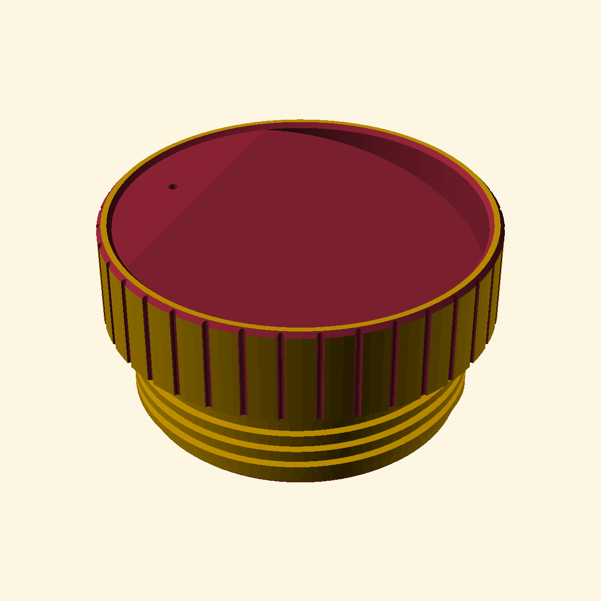 |
// Kohvitermose korgi parameetriline mudel
// Versioon: 1.71 (Põhja paksus ühtlustatud, randivaba sisekülg)
$fn = 100;
// --- PÕHIPARAMEETRID ---
d_base = 67;
thread_depth = 1.5;
turns = 3;
pitch = 4;
t_base = 2.0;
t_top = 1.8;
wall_thickness = 3;
grip_h = 20;
grip_d = 81;
grip_wall = 3;
lid_thickness = 3;
min_lid_depth = 1.0;
max_lid_depth = 13.0;
slope_ratio = 0.80;
chamfer_size = 1.0;
rib_count = 36;
rib_depth = 0.8;
rib_width = 1.5;
drain_hole_d = 6.0;
air_hole_d = 2.0;
// --- SIHTIMISE PARAMEETRID ---
drain_target_r_offset = 10;
drain_target_z_offset = 1.0;
air_vertical_r = (d_base/2 - wall_thickness) - air_hole_d/2 - 0.5;
// --- ARVUTATUD VÄÄRTUSED ---
start_offset = 2;
angle_compensation = 1.03;
fade_dist = 10;
thread_end_z = start_offset + (turns * pitch);
ring_z = thread_end_z + pitch;
grip_start_z = ring_z + pitch;
inner_d = grip_d - (grip_wall * 2);
inner_base_d = d_base - (wall_thickness * 2);
slope_len = inner_d * slope_ratio;
tilt_angle = atan((max_lid_depth - min_lid_depth) / slope_len);
// --- MOODULID ---
module thread_slice(angle, z_pos, fade_factor=1.0) {
current_depth = thread_depth * fade_factor;
rotate([0, 0, angle])
translate([d_base/2, 0, z_pos])
rotate([90, 0, 0])
linear_extrude(height = 0.01)
polygon(points=[[0, -t_base*fade_factor/2], [current_depth, -t_top*fade_factor/2], [current_depth, t_top*fade_factor/2], [0, t_base*fade_factor/2]]);
}
module generate_solid_thread() {
total_rise = turns * pitch;
total_path_len = sqrt(pow(total_rise, 2) + pow(PI * d_base * turns, 2));
steps = $fn * turns;
for (i = [0 : steps - 1]) {
angle1 = i * (360 * turns * angle_compensation / steps);
angle2 = (i + 1) * (360 * turns * angle_compensation / steps);
z1 = start_offset + (i * total_rise / steps);
z2 = start_offset + ((i + 1) * total_rise / steps);
s1 = min(1, min((i/steps*total_path_len) / fade_dist, (total_path_len - (i/steps*total_path_len)) / fade_dist));
s2 = min(1, min(((i+1)/steps*total_path_len) / fade_dist, (total_path_len - ((i+1)/steps*total_path_len)) / fade_dist));
if (s1 > 0 || s2 > 0) hull() { thread_slice(angle1, z1, s1); thread_slice(angle2, z2, s2); }
}
}
// --- KOOSTAMINE ---
difference() {
union() {
// 1. KORPUS
cylinder(h = grip_start_z, d = d_base);
generate_solid_thread();
translate([0, 0, ring_z]) rotate_extrude() translate([d_base/2, 0, 0])
polygon(points=[[0, -t_base/2], [thread_depth, -t_top/2], [thread_depth, t_top/2], [0, t_base/2]]);
translate([0, 0, grip_start_z]) cylinder(h = grip_h, d = grip_d);
}
// --- TÜHJENDAMISED ---
// A) ALUMINE ÜHTNE TÜHJENDUS (Sisu tegemine kaldus põhjaga)
translate([0, 0, -0.1]) cylinder(h = grip_start_z + 0.1, d = inner_base_d);
// Alumine sisefaas
translate([0, 0, -0.1])
cylinder(h = chamfer_size + 0.1, d1 = inner_base_d + (chamfer_size * 2), d2 = inner_base_d);
// See osa lõikab seestpoolt täpselt plaatide kuju järgi
translate([0, 0, grip_start_z])
intersection() {
cylinder(h = grip_h + 1, d = inner_base_d + 0.1); // Piirame korgi sisemõõduga
union() {
// Lame tühjendus altpoolt
translate([-inner_d, -inner_d/2, -0.1])
cube([inner_d * (1 - slope_ratio) + inner_d/2, inner_d, grip_h - min_lid_depth - lid_thickness + 0.1]);
// Kaldus tühjendus altpoolt (nihutatud lid_thickness võrra)
translate([-inner_d/2 + inner_d * (1 - slope_ratio) - 0.5, 0, grip_h - min_lid_depth - lid_thickness])
rotate([0, tilt_angle, 0])
translate([0, -inner_d/2, -50])
cube([inner_d * 1.5, inner_d, 50]);
}
}
// B) ÜLEMINE SÜVEND (Plaatide pealne tühjendus)
translate([0, 0, grip_start_z]) {
intersection() {
cylinder(h = grip_h + 1, d = inner_d);
union() {
translate([-inner_d, -inner_d/2, grip_h - min_lid_depth])
cube([inner_d * (1 - slope_ratio) + inner_d/2, inner_d, 50]);
translate([-inner_d/2 + inner_d * (1 - slope_ratio), 0, grip_h - min_lid_depth])
rotate([0, tilt_angle, 0])
translate([-0.1, -inner_d/2, 0])
cube([inner_d * 1.5, inner_d, 50]);
}
}
// C) HAARATSI DETAILID
for (i = [0 : rib_count - 1]) {
rotate([0, 0, i * (360 / rib_count)])
translate([grip_d / 2, 0, -1])
cylinder(h = grip_h + 2, d = rib_width, $fn=12);
}
translate([0, 0, grip_h - chamfer_size])
difference() {
cylinder(h = chamfer_size + 0.1, d = grip_d + 1);
cylinder(h = chamfer_size + 0.1, d1 = grip_d, d2 = grip_d - (chamfer_size * 2));
}
translate([0, 0, grip_h - chamfer_size])
cylinder(h = chamfer_size + 0.1, d1 = inner_d, d2 = inner_d + (chamfer_size * 2));
}
// D) VÄLISFAASID
translate([0, 0, -0.1])
difference() {
cylinder(h = chamfer_size + 0.1, d = d_base + 1);
cylinder(h = chamfer_size + 0.2, d1 = d_base - (chamfer_size * 2), d2 = d_base);
}
// E) AUGUD
hull() {
translate([inner_d/2 - drain_hole_d/2 - 0.5, 0, grip_start_z + grip_h - max_lid_depth])
sphere(d = drain_hole_d);
translate([inner_base_d/2 - drain_target_r_offset, 0, grip_start_z + drain_target_z_offset])
sphere(d = drain_hole_d);
}
translate([-air_vertical_r, 0, -1])
cylinder(h = grip_start_z + grip_h + 2, d = air_hole_d);
} |
— |
|
USB-Cap/USB-Cap.scad
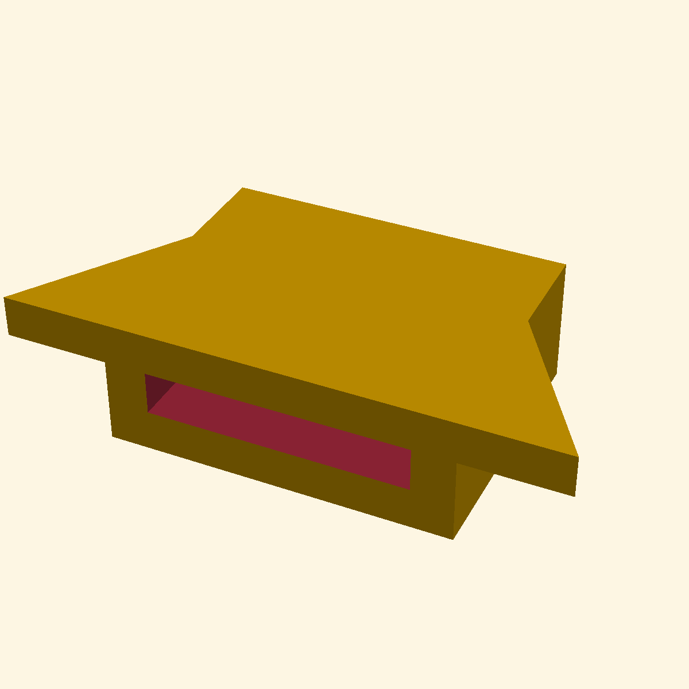 |
// v0.09 - Added chamfers to all four edges of the back end of the cap.
// Parameters for the USB-A plug
plug_width = 12.5;
plug_thickness = 2.1;
plug_length = 10;
// Parameters for the cap
cap_thickness = 2;
// Parameters for the ears
ear_leg_x = 5; // Length of the leg extending the cap's width (along X-axis)
ear_leg_y = 8; // Length of the leg extending into the cap from its front face (along Y-axis)
// Parameters for rounding
round_radius = 1; // Radius for rounding the outer edges
// Parameters for chamfering
chamfer_size = 1; // Size for chamfering the back edges
// Calculate outer dimensions of the cap
outer_width = plug_width + (2 * cap_thickness);
outer_length = plug_length + (2 * cap_thickness);
outer_height = plug_thickness + (2 * cap_thickness);
// Calculate inner dimensions of the cap (cavity)
inner_width = plug_width;
inner_length = plug_length;
inner_height = plug_thickness;
module usb_cap() {
union() {
// Main cap body with the cavity/opening
difference() {
// Outer body of the cap, which is a simple cube
cube([outer_width, outer_length, outer_height]);
// Chamfers for the four edges of the back end
// 1. Top-back edge (along X-axis, at Y=outer_length, Z=outer_height)
// Chamfers for the four edges of the back end
//
// 1. Bottom-back edge (along X-axis, at Y=outer_length, Z=outer_height)
translate([0, outer_length , 0]) {
rotate([0, 90, 0]) { // Align polygon in YZ, extrude along X
linear_extrude(height = outer_width) {
#polygon([[0,0], [-chamfer_size, 0], [0, -chamfer_size]]);
}
}
}
// 2. Top-back edge (along X-axis, at Y=outer_length, Z=0)
translate([0, outer_length, outer_height]) {
rotate([0, 90, 0]) { // Align polygon in YZ, extrude along X
linear_extrude(height = outer_width) {
polygon([[0,0], [chamfer_size, 0], [0, -chamfer_size]]);
}
}
}
// 3. Left-back edge (along Z-axis, at X=0, Y=outer_length)
translate([0, outer_length, 0]) {
linear_extrude(height = outer_height) {
polygon([[0,0], [chamfer_size, 0], [0, -chamfer_size]]);
}
}
// 4. Right-back edge (along Z-axis, at X=outer_width, Y=outer_length)
translate([outer_width, outer_length, 0]) {
linear_extrude(height = outer_height) {
polygon([[0,0], [-chamfer_size, 0], [0, -chamfer_size]]);
}
}
// Inner cavity with an opening on one side
// Position the cavity to start at Y=0 of the outer body
// and extend inward for inner_length + cap_thickness,
// leaving a cap_thickness wall at the other end.
translate([cap_thickness, 0, cap_thickness]) {
// This cube represents the void for the USB plug.
// It cuts through the cap from the Y=0 side.
cube([inner_width, inner_length + cap_thickness, inner_height]);
}
}
// Triangular ears
// Ear 1: on the right side of the cap (positive X side)
// Its top surface is aligned with the cap's top surface.
// It starts at the front edge (Y=0) of the cap.
translate([
outer_width, // Start at the positive X edge of the cap
0, // Start at the front (Y=0) edge of the cap
outer_height - cap_thickness // Bottom of extrusion aligns with cap's top surface
]) {
linear_extrude(height = cap_thickness) {
polygon([
[0, 0], // Corner on the cap's front-right edge (local X,Y)
[0, ear_leg_y], // Leg extending backwards along the cap's Y-direction (into the cap)
[ear_leg_x, 0] // Leg extending outwards along the cap's X-direction (making it wider)
]);
}
}
// Ear 2: on the left side of the cap (negative X side)
// Its top surface is aligned with the cap's top surface.
// It starts at the front edge (Y=0) of the cap.
translate([
0, // Start at the negative X edge of the cap
0, // Start at the front (Y=0) edge of the cap
outer_height - cap_thickness // Bottom of extrusion aligns with cap's top surface
]) {
linear_extrude(height = cap_thickness) {
polygon([
[0, 0], // Corner on the cap's front-left edge (local X,Y)
[0, ear_leg_y], // Leg extending backwards along the cap's Y-direction (into the cap)
[-ear_leg_x, 0] // Leg extending outwards along the cap's X-direction (making it wider)
]);
}
}
}
}
usb_cap();
|
— |
|
Utility-Door-Key-Knob/Utility-Door-Key-Knob.scad
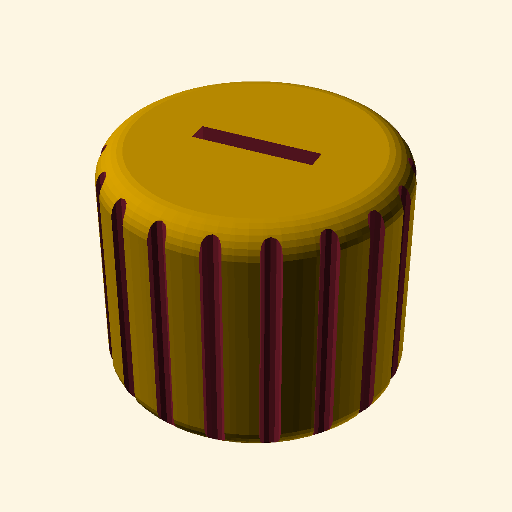 |
// Ergonomic Utility Door Key Knob - Filleted Cylinder
// Version: 0.07
/* [Knob Dimensions] */
knob_diameter = 30;
knob_height = 25;
knob_resolution = 64;
/* [Ergonomic Features] */
rounding_radius = 3; // How much to round the top and bottom edges
number_of_grooves = 18;
groove_depth = 1.0;
/* [Key Dimensions] */
key_thickness = 2.0;
key_total_length = 20;
key_wide_part_length = 6;
key_width_back = 18;
key_width_front = 12;
/* [Fit Settings] */
clearance = 0.2;
module key_slot() {
t = key_thickness + clearance;
w_back = key_width_back + clearance;
w_front = key_width_front + clearance;
L1 = key_wide_part_length;
L_taper = key_total_length - L1;
// Cutting extra long to ensure it clears the rounded ends
translate([0, 0, -5])
union() {
// 1. Back section
translate([-w_back/2, -t/2, 0])
cube([w_back, t, L1 + 5.1]);
// 2. Taper section
translate([0, 0, L1 + 5])
hull() {
translate([-w_back/2, -t/2, 0]) cube([w_back, t, 0.01]);
translate([-w_front/2, -t/2, L_taper]) cube([w_front, t, 0.01]);
}
// 3. Front extension (through the top)
translate([-w_front/2, -t/2, L1 + 5 + L_taper])
cube([w_front, t, knob_height + 10]);
}
}
module knob_body() {
difference() {
// Create a cylinder with rounded top and bottom edges
// We shrink the main cylinder slightly so the 'minkowski'
// sphere brings it back to the target diameter.
minkowski() {
cylinder(
d = knob_diameter - (2 * rounding_radius),
h = knob_height - (2 * rounding_radius),
$fn = knob_resolution,
center = true
);
sphere(r = rounding_radius, $fn = 32);
}
// Vertical grooves for grip
for (i = [0 : number_of_grooves - 1]) {
rotate([0, 0, i * (360 / number_of_grooves)])
translate([knob_diameter / 2, 0, 0])
cylinder(r = groove_depth, h = knob_height + 2, center = true, $fn = 12);
}
}
}
// Final Assembly
difference() {
// Center the body at Z=height/2 for easy slot alignment
translate([0, 0, knob_height / 2]) knob_body();
// Subtract the slot (centered vertically)
translate([0, 0, (knob_height - key_total_length) / 2])
key_slot();
} |
— |
|
Vacuum-Adapter-31mm-to-31mm/Vacuum-Adapter-31mm-to-31mm.scad
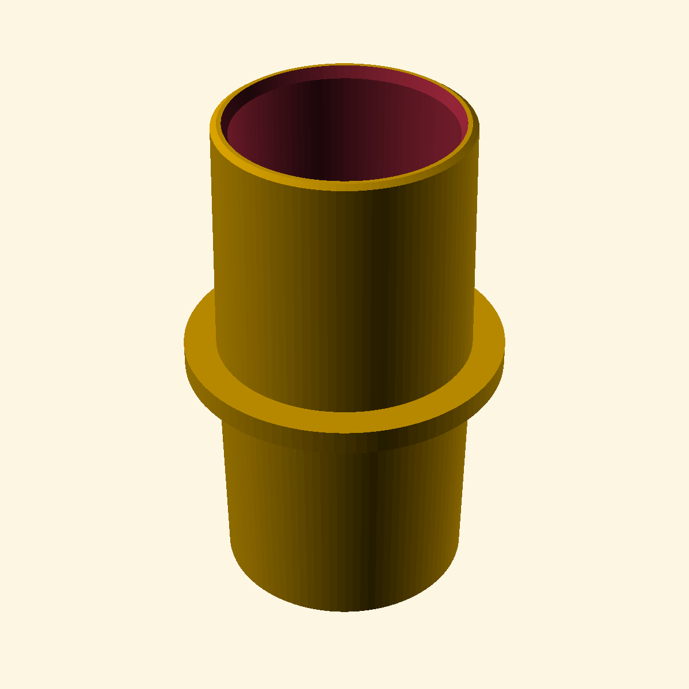 |
/* [General Dimensions] */
// The exact ID of your vacuum and nozzle (mm)
Base_Diameter = 32.0;
// Thickness of the walls (mm)
Wall_Thickness = 2.5;
// How deep the adapter should slide into the tools (mm)
Insertion_Length = 30;
// How much the diameter shrinks toward the tips (mm)
Taper_Amount = 1.0;
/* [Flange Settings] */
// Width of the center stop ring (mm)
Flange_Diameter = 40;
// Thickness of the center stop ring (mm)
Flange_Thickness = 3;
/* [Smoothing & Airflow] */
// Size of the lead-in chamfers (mm)
Bevel_Size = 1.5;
// Level of detail (higher = smoother circles)
$fn = 100; // [50:150]
/* [Preview] */
// Show a cut-away view to see internal airflow?
Part_Preview = "Full Model"; // [Full Model, Cross Section]
//Part_Preview = "Cross Section"; // [Full Model, Cross Section]
// --- Logic ---
Total_Height = (Insertion_Length * 2) + Flange_Thickness;
Airway_Dia = Base_Diameter - (Wall_Thickness * 2);
module adapter_core() {
difference() {
// --- OUTER SHAPE ---
union() {
// Lower Half
hull() {
translate([0,0,0.5])
cylinder(h = Insertion_Length-0.5, d1 = Base_Diameter - Taper_Amount, d2 = Base_Diameter);
cylinder(h = 0.1, d = Base_Diameter - Taper_Amount - Bevel_Size);
}
// Middle Flange
translate([0, 0, Insertion_Length])
cylinder(h = Flange_Thickness, d = Flange_Diameter);
// Upper Half
hull() {
translate([0, 0, Insertion_Length + Flange_Thickness])
cylinder(h = Insertion_Length - 0.5, d1 = Base_Diameter, d2 = Base_Diameter - Taper_Amount);
translate([0, 0, Total_Height - 0.1])
cylinder(h = 0.1, d = Base_Diameter - Taper_Amount - Bevel_Size);
}
}
// --- INNER AIRWAY ---
union() {
// Main bore
translate([0, 0, -1])
cylinder(h = Total_Height + 2, d = Airway_Dia);
// Internal chamfer at bottom
translate([0,0,-0.1])
cylinder(h = Bevel_Size, d1 = Airway_Dia + Bevel_Size, d2 = Airway_Dia);
// Internal chamfer at top
translate([0,0, Total_Height - Bevel_Size + 0.1])
cylinder(h = Bevel_Size, d1 = Airway_Dia, d2 = Airway_Dia + Bevel_Size);
}
}
}
// --- Rendering Logic ---
if (Part_Preview == "Full Model") {
adapter_core();
} else {
difference() {
adapter_core();
translate([0, -Flange_Diameter/2, -1])
cube([Flange_Diameter, Flange_Diameter, Total_Height + 2]);
}
} |
— |
|
Wall-Mount-J-Hook/Wall-Mount-J-Hook.scad
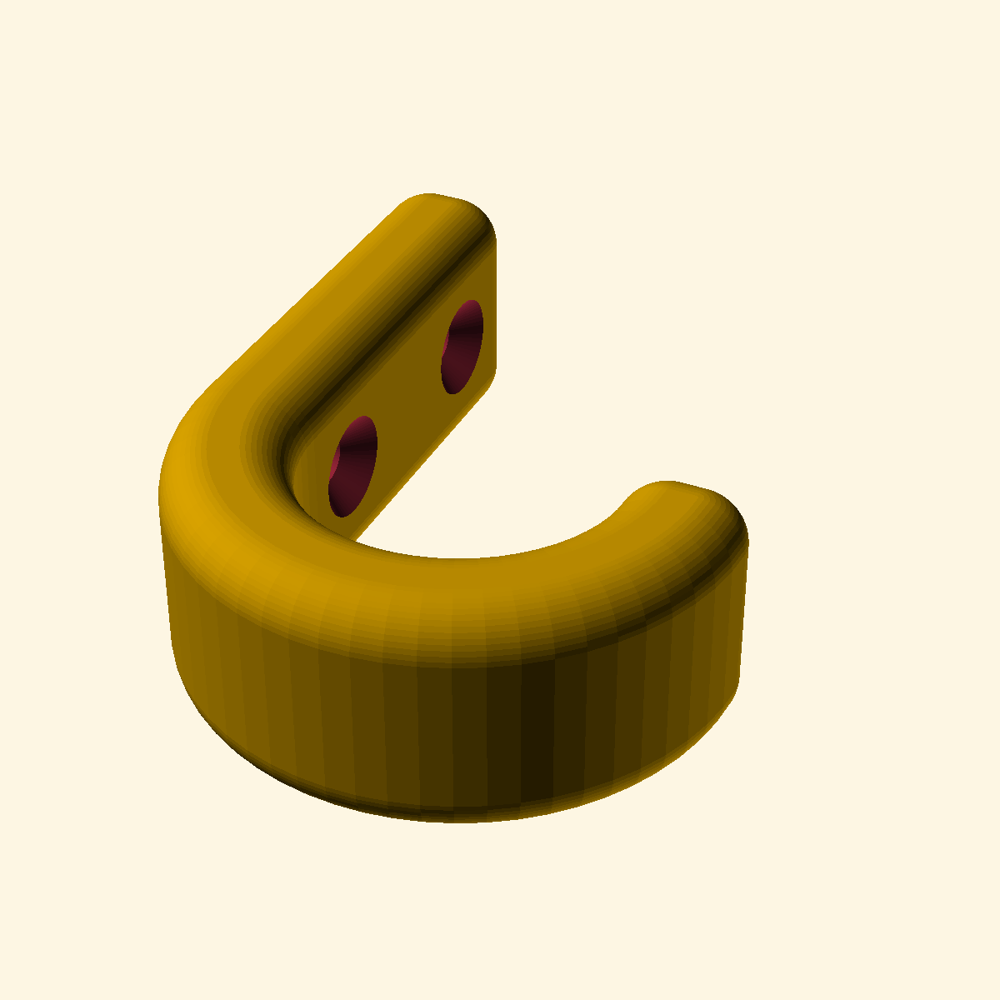 |
// Project Version: 1.37
// J-shaped wall hook - Thingiverse Customizer Compatible
// 25%/75% proportional screw holes with dynamic 90-degree countersink
/* [Hook Dimensions] */
// Diameter of the inside of the hook (mm)
inner_diameter = 25;
// Total thickness of the material (mm)
thickness = 10;
// Total width of the hook (mm)
width = 20;
// Rounding radius for edges (Minkowski)
rounding = 4;
// Total height of the mounting plate (mm)
back_plate_height = 40;
/* [Screw Hole Parameters] */
// Diameter of the screw shank (mm)
screw_d = 4;
// Multiplier for the head diameter (Standard is 2.0)
head_multiplier = 2.125;
/* [Hidden] */
$fn = 60;
// --- DYNAMIC CALCULATIONS ---
// Standard 90-degree countersink: head diameter is derived from shank
countersink_d = (screw_d * head_multiplier);
// 90-degree angle formula: h = (D - d) / 2
countersink_h = (countersink_d - screw_d) / 2;
// Core dimensions adjusted for Minkowski offset
m_width = width - (rounding * 2);
m_thick = thickness - (rounding * 2);
r_inner = (inner_diameter / 2) + rounding;
r_outer = r_inner + m_thick;
// Proportional hole positions (25% and 75% of height)
hole_pos_low = back_plate_height * 0.25 - rounding;
hole_pos_high = back_plate_height * 0.75 - rounding;
echo("Running OpenSCAD Hook Version: 1.37");
echo("Calculated countersink height:", countersink_h);
difference() {
// 1. MAIN BODY
minkowski() {
// Extrude along the Y-axis (width)
linear_extrude(height = m_width, center = true) {
union() {
// Mounting plate profile
translate([-m_thick/2, 0])
square([m_thick, back_plate_height - (rounding * 2)]);
// Hook arc profile
translate([m_thick/2 + r_inner, 0])
difference() {
circle(r = r_outer);
circle(r = r_inner);
// Cut to create J-shape
translate([-r_outer * 2, 0])
square([r_outer * 4, r_outer * 2]);
}
}
}
sphere(r = rounding);
}
// 2. SCREW HOLES
for (z_pos = [hole_pos_low, hole_pos_high]) {
// Position at the front surface
translate([thickness/2, z_pos, 0])
rotate([0, 90, 0]) {
// Main screw shank hole
cylinder(d = screw_d, h = thickness * 3, center = true);
// 90-degree countersink
// Starts from the surface and goes inward by countersink_h
translate([0, 0, -countersink_h])
cylinder(d1 = screw_d, d2 = countersink_d, h = countersink_h + 0.1);
// Surface clearance to ensure no thin layers on top
translate([0, 0, 0])
cylinder(d = countersink_d, h = 2);
}
}
} |
— |